戦士 WAR
あらゆる武器を操る戦闘のプロ。高いHPと腕力で前衛として活躍する。
- なり方
- 最初から
- 武器
- 片手剣・斧・両手剣・棍など何でも
- アビリティ
- 剛力乱撃(Lv1)、挑発(Lv5)、プル(Lv10)、猛り(Lv15)、守りの型(Lv25)、鬨の声(Lv35)…
- 魔法
- なし
グリオンは、剣と魔法の世界で仲間と一緒に魔物を狩り、依頼をこなして強くなるオンラインRPGです。いまはアーリーアクセス版を遊べます（Windows 11／10）。町の外の魔物を倒すと経験値と「グリム」（お金）が手に入り、レベルは最大60まで上がります。
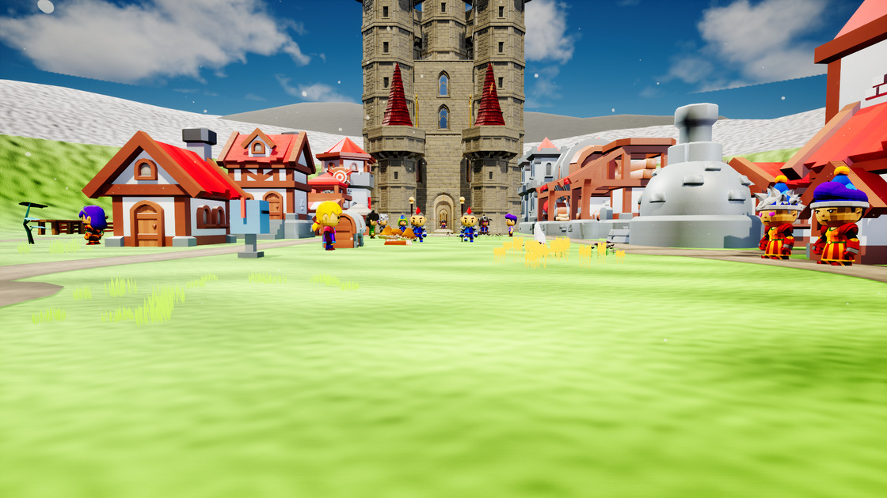
 グリオン物語この世界は、空に浮かぶ一冊の魔導書に綴られている──。七つの冠と、空に消えた都をめぐる物語。Lv60の先に続く続編の構想も。遊ぶ前に読むと、町や魔物の見え方が変わります。
グリオン物語この世界は、空に浮かぶ一冊の魔導書に綴られている──。七つの冠と、空に消えた都をめぐる物語。Lv60の先に続く続編の構想も。遊ぶ前に読むと、町や魔物の見え方が変わります。
GrimoireOnline_Setup.exe を開いて「次へ」。「WindowsによってPCが保護されました」と出たら「詳細情報」→「実行」を押します（発行元を確認できない時に表示されます）。ログイン画面にはサーバーの一覧が出ます。遊ぶ時はアステリアを選びます。ノクターン(検証用)は検証用のため灰色で表示され、遊ぶ人は選べません。ログインすると、つながっているサーバーの名前が窓の上端と画面の右下に出ます。
能力の「＋」「－」は、ジョブの基礎値に足される種族補正です。HP・MPはジョブの値に割合を掛けます。MPが0のジョブは、MP補正があっても0のままです。
| 種族 | 見た目 | HP / MP | 能力補正 | 相性のよいジョブ |
|---|---|---|---|---|
| アルデン | 標準的な背丈 | 100% / 100% | 補正なし | すべてのジョブ。迷った時にも選びやすい |
| セルヴァ | 長身 | 104% / 92% | 腕力+3、器用-1、耐久+1、敏捷-2、知力-3、精神+3、魅力+1 | 腕力を使う戦士、精神の高い白導士 |
| ミュル | 小柄 | 88% / 115% | 腕力-3、器用-1、耐久-3、敏捷+1、知力+4、精神+2、魅力-1 | 知力とMPが高い黒導士、魔法を使う紅導士 |
| フェリン | 耳と尻尾のある獣人 | 98% / 94% | 腕力+1、器用+3、耐久-1、敏捷+4、精神-3、魅力-2 | 器用と敏捷が高いローグ |
| グラウド | ひときわ大柄 | 112% / 80% | 腕力+2、器用-1、耐久+4、敏捷-2、知力-2、精神-3、魅力-3 | HPと耐久が高いモンク、腕力を使う戦士 |
種族の能力補正は固定値です。レベルごとの伸び方はジョブで決まります。キャラクター作成後にジョブは何度でも変えられますが、種族は変えられません。
通報・ミュートは、ほかの冒険者を選んだ操作窓、またはYの一覧で相手を選んで右矢印から開きます。Yのオンライン一覧にはメイン・副ジョブとレベル、ミュート中の印が出ます。EnterとDeleteの操作はこれまでどおりです。
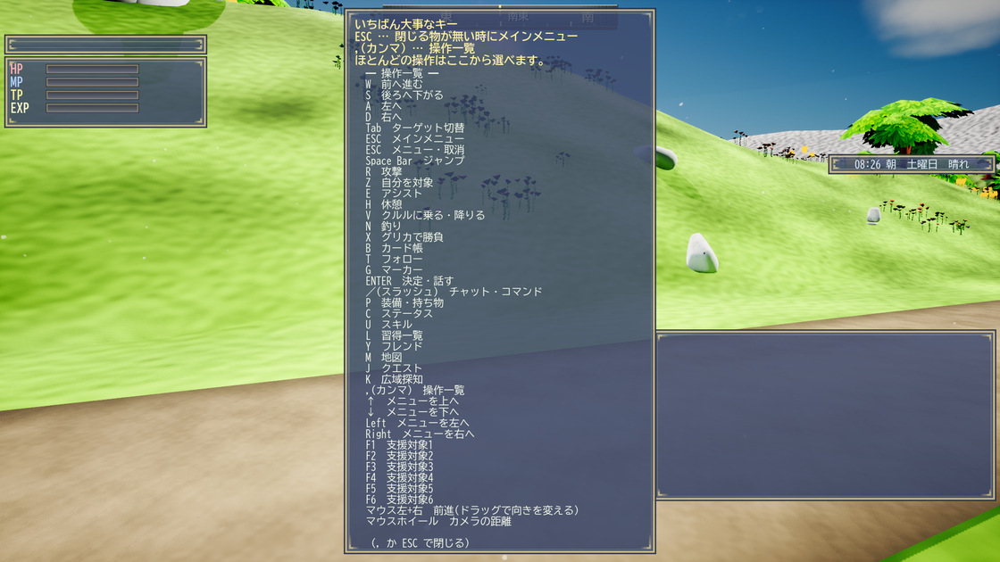
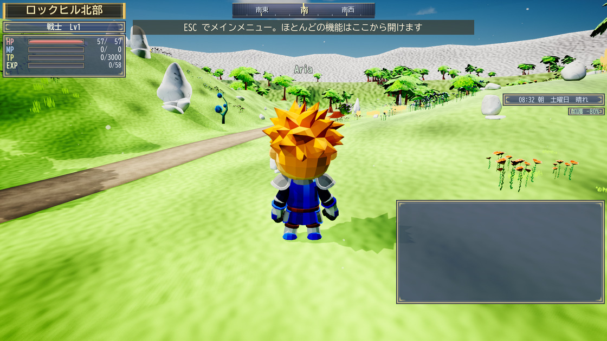
| W A S D | 前後左右に歩く |
|---|---|
| Space | ジャンプ(クルルに乗っている時は浮き走り・滑空。風の手綱が要る) |
| マウス右ボタンを押しながら動かす | 視点を回す |
| マウス左右ボタンを同時押し | 前へ歩く(押したまま動かすと向きが変わる) |
| マウスホイール | カメラの距離 |
| V | クルルに乗る・降りる(クルルの笛が要る) |
| T | 選んだ人に付いて歩く(フォロー) |
| TAB | 近くの魔物・NPC・人を順に選ぶ |
|---|---|
| F か ENTER | 選んだ相手に「話す」「調べる」／コマンド窓を開く／決定 |
| ESC | 窓を閉じる・取り消し・攻撃をやめる |
| Z | 自分を選ぶ |
| ↑↓←→ | 窓の中で選ぶ |
| F1〜F6 | 回復や強化の相手(パーティの1〜6人目) |
| F か ENTER →「攻撃」を選ぶ | 敵を選んで F か ENTER を押すとコマンド窓が開きます。その中の「攻撃」を ↑↓ で選んで F か ENTER を押すと、離れていても敵のそばまで自動で歩いて行き、着いたら自動で攻撃し続けます(おすすめ。R キーでも攻撃でき、R をもう一度押すと止まる) |
|---|---|
| F か ENTER →「武技」を選ぶ | 同じコマンド窓の「武技」から武技を使います(技ごとの必要TP1000〜3000に届いた時。コマンドから選ぶ) |
| F か ENTER →「魔法」を選ぶ | 同じコマンド窓の「魔法」から魔法を使います(コマンドから選ぶ) |
| E | 仲間が攻撃している相手を自分も狙う(アシスト。チャットで /assist と打っても同じ) |
| H | 座って休む(HP・MPが回復) |
| G | 選んだ相手にマーカーを付ける |
| 左Alt(押したまま) | 詠唱の鏡を出す。マウスか矢印で縦横の線を引き、離すとその形の魔法を唱える |
| ESC | 閉じる物が無い時にメインメニュー(全部の機能はここから) |
|---|---|
| P | 装備・持ち物。装備の面には姿見があり、V または右スティックで姿を回せる |
| C | 能力・クルル・称号・絆・証の表 |
| U | 戦闘・生産・採集の技能表 |
| L | 習得している技の一覧 |
| J | クエスト |
| M | 地図 |
| K | 広域探知(周りの魔物・仲間の一覧)。↑↓で敵を選んで F か ENTER を押すと、その敵をターゲットして、そばまで自動で歩いて行きます(着いたら F か ENTER →「攻撃」)。仲間を選ぶと、その場所まで歩きます |
| Y | プレイヤー情報（フレンド・ランキング）。TAB / SHIFT+TAB・LB/RBでタブ切替。ランキングは左右で種類、上下で人と最高値の時の装備を見る |
| O | 宝物殿（ガチャを引く・引いた記録など） |
| B | カード帳(グリカ)。もう一度 B で閉じる |
| X | 選んだ相手にグリカ「魔法陣」で勝負を挑む。席では向かいの人に申し込む |
| N | 釣り(竿と餌を装備して水辺で) |
| ,(カンマ・ねのキー) | 操作一覧 |
ランキングに載る自分の装備は、設定の「ランキングで装備を見せる」で非公開にできます。
| /(スラッシュ) | チャット・コマンド入力 |
|---|---|
| Ctrl+Q | 欠けている絆(仲間)を順に呼び足す |
| Shift+Q | 自動で戦う・採取・町に戻るの窓。戦う型と町に戻るはLv30から |
窓のタブ: 金色のタブ欄がある窓は、TAB／Shift+TAB、またはコントローラーの LB／RB で面を切り替えます。窓の中で左右をほかの操作に使わない場合は、←／→や十字キーの左右でも切り替えられます。
ターゲットの印: 初めて選ぶと説明の吹き出しが出ます。金の「▶◀」はメインターゲットで、F か ENTERを押すと話す・攻撃などのアクションを選べます。緑の「《 》」はヒールや強化などのコマンドの対象にするサブターゲットで、敵のメインターゲットは変わりません。「誰にかける？」の一覧では ↑↓ に加えて ←→ でも支援する相手を選べます。F1〜F6 でも直接選べます。
ターゲットとパーティの欄: 右上の主ターゲット（メインターゲット）の欄は、何を選んでも同じ大きさで出ます。説明が長い時は、欄の中で字を小さくして収めます。副ターゲット（サブターゲット）の欄は、そのすぐ下のいつも同じ位置に出ます。左上のパーティの欄では、副ターゲットに選んでいる人の行が光る帯と「副」の札で分かります。自分の行には、自分のキャラクターの名前が出ます。
コマンド窓の一覧: コマンド窓とその中の一覧（魔法・アビリティ・アイテムなど）では、一番下で↓を押すと一番上へ、一番上で↑を押すと一番下へ回ります。お店や倉庫などほかの一覧は、端で止まります。
コマンド窓を開いたまま歩く: コマンド窓とその中の一覧（魔法・アビリティ・アイテムなど）を開いている間も、W A S D（コントローラーは左スティック）で歩けます。窓の中の選択は ↑↓←→（コントローラーは十字キー）だけで動き、決める・閉じるのキーは今までどおりです。合成のレシピ帳・注文板・ワープの行き先の窓では、今までどおり歩けません。歩くと詠唱が止まるのも今までどおりです。
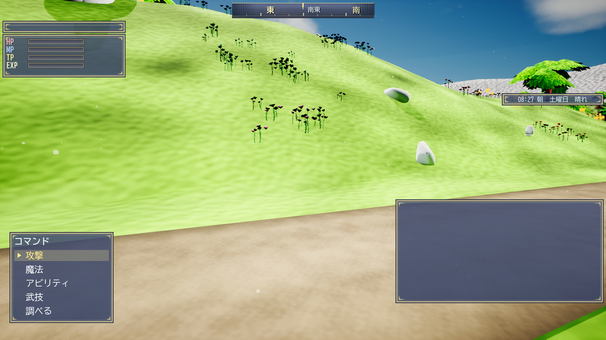
窓や確認は ESC で閉じられます。
NPCに近づいてTABで選びF か ENTER。店は品を選んでF か ENTERで買い、売るときは自分の持ち物の欄へ←→で移ります。頭の上に「！」が出ているNPCは依頼を持っています（「！！」は絆の証、「？」は報告できる／進行中）。
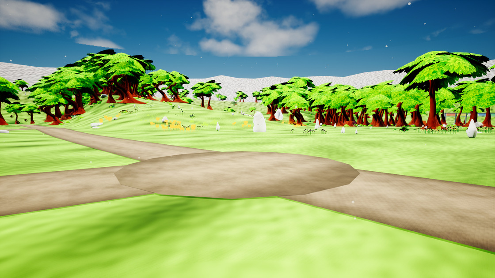
/ah）。「同じレベル〜少し上」の魔物を狩るのがいちばん効率よく、格上（レベルが5以上上）は絆を呼んでも危険です。狩り場を移す目安をまとめました。
| レベル | 狩り場 | 相手にする魔物 | 受ける依頼 | ひとこと |
|---|---|---|---|---|
| Lv1〜5 | ロックヒル西部 | スライム(Lv1〜2)・チキン(Lv1)→コウモリ(Lv2)→ゴブリン(Lv3)→サソリ・カエル(Lv4)→マッシュ(Lv5) | 「スライム退治」「薬包の奪還」「盗賊団への入団試験」「鉱山の通行許可」「古びた地図の調査」 | Lv1〜3は「初心者の加護」で受ける傷が減る(Lv1で−30%)。Lv8までは倒れても経験値が減らない。「スライム退治」を報告すると絆の者が1人仲間になる。 |
| Lv5〜10 | 西部の奥・ロックヒル東部・大坑道 | ゴブリン番兵(Lv6)・カクタス(Lv7)→東部のスライム・バーブ・トゲスライム(Lv6〜8)・アルマビー(Lv9)。大坑道(Lv5〜9) | 「珍味の食材」「カクタス退治」「ゴブリンの頭目退治」→ギルドの依頼が始まる。Lv10「坑道の主を鎮めよ」「釣り人への道」 | Lv10で絆「白導士セラ」の証(導師エルナ。最初の依頼でセラが来た人は済み)。指輪・ピアス・ブラス装備が着けられる。 |
| Lv10〜15 | ロックヒル東部・ミストヴェイル密林 | オーク(Lv11)・ワーグ(Lv12)・ゴブリン呪術師(Lv13)／密林のピンクゼリー(Lv10)・サーベルキャット(Lv12)・モンクルース(Lv13) | ギルド「オーク隊の掃討」「ワーグの群れ」「牙猫の狩り場」。Lv12〜16 クルル舎の親方の3つ(クルルに乗れる) | Lv15で絆「戦士リオ」(訓練官ドルグ。最初の依頼でリオが来た人は済み)。ここから絆と一緒に狩ると楽。 |
| Lv15〜20 | ヴェルダン高原・密林の奥 | 鬼ラビット(Lv14)・スクイドル(Lv16)・ハイワール(Lv17)・サーベルキャット(Lv18)・ゴースト(Lv19)・ディノ(Lv20) | Lv18 ポムリーの「炎・土・水の証」→Lv20「ポムリーの試練」で副ジョブ。Lv17「聖印のかけら」、Lv20「墓守の依頼」 | ぬし退治(ガラ・ヘイLv17、ソルジャークロウラーLv18、プリンセストードLv20、蛇司祭シェザルLv20)は絆を3〜4人呼んで挑む。 |
| Lv20〜30 | ヴェルダン高原の奥・万魔の谷の入口・モルガ胞子林・地下霊廟 | オークスカル(Lv22)・コーカス(Lv22)・イエティ(Lv25)／谷のゴーレリング(Lv21)・コルヴ(Lv24)／胞子林(Lv24〜30)／地下霊廟(Lv24〜36) | ギルド「オークスカルの砦」、Lv22「牙の交易品」、Lv25「女王の宝珠」、Lv28「雪男の毛皮」 | Lv20 絆「黒導士ノア」、Lv25「モンクガイ」。Lv28以降は上級ジョブの依頼が始まる。 |
| Lv30〜40 | 万魔の谷・サルタ塩湖跡 | エイリアン・スカルゴースト(Lv30)・デーモン(Lv32)・ブルーデーモン(Lv35)／塩湖跡の塩殻ガニ(Lv32)〜白骨番兵(Lv38) | Lv30 上級ジョブの依頼5本(ナイト・冥騎士・獣導士・忍者・吟遊詩人)。ギルド「万魔の谷のデーモン」 | Lv30で自動で戦えるようになる。絆はミナ(Lv32)・リラ(Lv35)・リュカ(Lv36)。 |
| Lv40〜50 | エメル海岸・万魔の谷の奥・地底塩窟 | 浜の魔物(Lv40〜50)／谷の奥の戦慄竜(Lv44)・魂喰竜(Lv46)／地底塩窟(Lv40〜52) | Lv41 絆「ナイトアルド」。Lv45 ギルド「竜殺しの証」→Lv46〜50「アダマン」3本 | Lv50で「勇者の資格」(鏡の祠)。王のぬし3体(モルガLv35・サルタLv44・ガルマーレLv52)を討つ。 |
| Lv50〜60 | 鈍色の塩底・ヴェルミア岬・影ロックヒル | 塩底の枯塩の徘徊者(Lv48)〜白晶の巨躯(Lv60)／岬の大蟹(Lv58)〜廃城の黒騎士(Lv70) | ギルド「湖」の依頼4本(Lv54〜60)。Lv58〜60 剣聖の道3本。絆カゲロウ(Lv51)・ルカ(Lv52)・ヴァル(Lv57) | アーリーアクセスの間はレベルの上限が60（Lv61〜70は正式版で）。影ロックヒルの11階を降りて【勇者】の称号を目指す。 |
/ai）。依頼はJの窓で確かめられます。「受注中に倒すと『だいじなもの』に入る」型の依頼は、受けてから倒さないと品が落ちません。連続する依頼は前の1つを終えると次が出ます。
依頼の報酬の経験値は、依頼のレベルと報告した時のメインジョブのレベルの低い方で決まります（日替わりの手配書も同じです）。受けたまま低いジョブへ替える時は、ジョブチェンジの確かめに注意が出ます。
| Lv | 依頼 | 受ける相手 | やること | 褒美 |
|---|---|---|---|---|
| Lv1 | スライム退治 町の東の門を出た先、ロックヒル西部のスライムを5体倒してきておくれ。門を出てすぐ、街道の北側に居るぞ。 | 町の住人 | スライム ×5 | 50グリム、冒険者の指輪 |
| Lv8 | カクタス退治 ミストヴェイル密林のカクタスを16体退治してほしい。針が厄介でな。 | 町の住人 | カクタス ×16 | 80グリム、不動のマント |
| Lv2 | 薬包の奪還 スライムが薬包を飲み込んで逃げた。受注中に倒して取り返してくれ（だいじなものに入る）。 | 衛兵 | 品を集めて渡す | 40グリム、韋駄天の靴 |
| Lv3 | 盗賊団への入団試験 腕を見せてもらおう。コウモリを8匹始末してこい。 | 怪しい男 | コウモリ ×8 | 70グリム、盗賊団のドクロ章 |
| Lv4 | 鉱山の通行許可 ゴブリンどもが坑道の入口に居座っててな。6体退治してくれれば通行証を出そう。 | 鉱夫 | ゴブリン ×6 | 65グリム、鉱山の通行証 |
| Lv10 | 坑道の主を鎮めよ 坑道の奥に主が居着いてしまった。あれを鎮めんと、掘るに掘れん。 | 鉱夫 | 大坑道の主ドルガン ×1 | 110グリム |
| Lv5 | 古びた地図の調査 サソリを6匹退治してくれたら、この古びた地図を譲ろう。 | 旅の商人 | サソリ ×6 | 60グリム、古びた地図 |
| Lv6 | 珍味の食材 料理に使うサソリの尾が欲しい。受注中にサソリを倒すとだいじなものに入る。 | 料理人 | 品を集めて渡す | 35グリム、詠唱のサークレット |
| Lv15 | 鬼ラビット狩り ヴェルダン高原の鬼ラビットを20匹狩ってきておくれ。 | 猟師 | 鬼ラビット ×20 | 100グリム、勇者の剣 |
| Lv11 | 密書を届けよ 情報屋が密書を持っている。受け取って私（町長）に届けてくれ。 | 町長 | 品を集めて渡す | 90グリム、賢者のピアス |
| Lv17 | 聖印のかけらを探せ ゴブリン番兵が聖印のかけらを持っているはずだ。受注中に奴を倒して取り戻してくれ。 | 神官 | 品を集めて渡す | 120グリム、戦人の腕輪 |
| Lv25 | 女王の宝珠を求めて 町はずれの古い宝箱に女王の宝珠が眠っているという。受注中に宝箱を開けて持ってきてくれ。 | 学者 | 品を集めて渡す | 140グリム、盗賊の短剣 |
| Lv10 | 釣り人への道 釣りは いいぞう。竿と餌を装備して、水辺で釣りキー(N)か /fish だ。魚を10匹釣ってきたら、わしの匠の竿を譲ってやろう。 | 釣り師ヴェッド | 魚を10匹釣る | 60グリム、匠の釣り竿 |
| Lv10 | 大物への道 匠の竿にも慣れたようだな。次は引きの強い魚だ。野の池のオオナマズと、大坑道の水に棲む晶鱗魚を1匹ずつ持ってきてくれ。どちらも竿力3はないと糸を切られるぞ。揃ったら、わしの黒漆の竿を譲ってやろう。 | 釣り師ヴェッド | 品を集めて渡す | 200グリム、黒漆の釣り竿 |
| Lv | 依頼 | 受ける相手 | やること | 褒美 |
|---|---|---|---|---|
| Lv9 | ゴブリンの頭目退治 厄介なゴブリン番兵を10体討伐してくれ。 | ギルド受付 | ゴブリン番兵 ×10 | 70グリム、守りの兜 |
| Lv11 | オーク隊の掃討 ロックヒル東部でオークが徒党を組んでいる。12体ほど散らしてきてほしい。 | ギルド受付 | オーク ×12 | 75グリム |
| Lv12 | ワーグの群れ 街道にワーグが出た。10頭ほど間引いてくれ。旅人が通れん。 | ギルド受付 | ワーグ ×10 | 85グリム |
| Lv13 | 牙猫の狩り場 ミストヴェイル密林のサーベルキャットを10頭。狩り場を取り戻したい。 | ギルド受付 | サーベルキャット ×10 | 95グリム |
| Lv18 | ナーガの祈祷を断て ナーガの司祭がミストヴェイル密林で怪しい祈祷を続けている。6体を鎮めてきてくれ。 | ギルド受付 | ナーガの司祭 ×6 | 130グリム |
| Lv23 | オークスカルの砦 ヴェルダン高原の砦にオークスカルが居座った。8体、砦から追い出してくれ。 | ギルド受付 | オークスカル ×8 | 190グリム |
| Lv33 | 万魔の谷のデーモン 万魔の谷にデーモンが湧いている。5体。……無理はするな、と言っても行くのだろう? | ギルド受付 | デーモン ×5 | 320グリム |
| Lv45 | 竜殺しの証 ギルド最後の依頼だ。ドラゴンロードを討て。生きて戻れば、君の名は記録に残る。 | ギルド受付 | ドラゴンロード ×1 | 900グリム、アダマンソード |
| Lv46 | 炉に灯を その剣を打った鉱がまだ要る。万魔の谷の奥にいる戦慄竜の腹にアダマン鉱が眠っている。持って帰れるか。 | ギルド受付 | 品を集めて渡す | 1200グリム、アダマンガントレ |
| Lv48 | 拳に鋼を 万魔の谷の奥の魂喰竜を3頭。鋼は打つほど締まる。お前も同じだ。 | ギルド受付 | 魂喰竜 ×3 | 1500グリム、アダマンクロー |
| Lv50 | 不退の脚 最後だ。竜王の鱗を一枚剥いでこい。あれを踏み固めた脚甲は、生涯退かずに済む。 | ギルド受付 | 品を集めて渡す | 2000グリム、アダマングリーブ |
| Lv54 | 湖底の影を祓え 鈍色の塩底の奥に、形を持たぬ影が湧いている。5つ祓ってくれ。あそこは灯りが効かん。 | ギルド受付 | 湖底の影 ×5 | 2400グリム、静寂の環 |
| Lv57 | 黒騎士の残骸 鈍色の塩底をさまよう黒騎士がいる。兜の欠片を一つ持ち帰ってくれ。名も知れぬ古い兵だ。 | ギルド受付 | 品を集めて渡す | 2800グリム、鎮魂の耳環 |
| Lv59 | 白晶を砕く 湖の一番深い所で、塩の巨躯が育ちきっている。3体砕け。育つ前でないと手が付けられん。 | ギルド受付 | 白晶の巨躯 ×3 | 3400グリム、白晶の指輪 |
| Lv60 | 湖底王ネルガル 乾いた湖の底に、王を名乗る者が座っている。ネルガル。……生きて戻れとは言わん、が、戻ってこい。 | ギルド受付 | 湖底王ネルガル ×1 | 6000グリム、湖底王の首飾り |
| Lv | 依頼 | 受ける相手 | やること | 褒美 |
|---|---|---|---|---|
| Lv18 | 炎の証 まずはロックヒル東部のガラ・ヘイを倒し、『炎の証』を持ち帰るポム！ 強敵だから油断しないポム！ | ポムリー | 品を集めて渡す | 180グリム |
| Lv18 | 土の証 次はソルジャークロウラーを倒し、『土の証』を持ち帰るポム！ 固い殻に負けないポム！ | ポムリー | 品を集めて渡す | 220グリム |
| Lv18 | 水の証 最後の証はプリンセストードが持つ『水の証』ポム！ 跳ね回る強敵を仕留めてくるポム！ | ポムリー | 品を集めて渡す | 300グリム |
| Lv20 | ポムリーの試練 三つの証だけでは終わりじゃないポム！ 蛇司祭シェザルと呼ばれるナーガの司祭を倒し、本当の力を示すポム！ | ポムリー | 蛇司祭シェザル ×1 | 500グリム、副ジョブ(ポムリーに話す) |
| Lv | 依頼 | 受ける相手 | やること | 褒美 |
|---|---|---|---|---|
| Lv12 | クルルの好物 クルルと仲良くなりたいなら、まず腹を満たしてやることだ。香草を3束、摘んできな。 | クルル舎の親方 | 品を集めて渡す | 90グリム |
| Lv14 | 野生のクルル 野生のクルルは、ワーグの臭いをひどく嫌う。ロックヒル東部で7頭追い払い、道を静かにしてきな。 | クルル舎の親方 | ワーグ ×7 | 130グリム |
| Lv16 | クルル乗りの証 仕上げだ。ロックヒル東部を縄張りにするアルパキングを退けてこい。あいつの前で怯まなければ、クルルも背を預ける。 | クルル舎の親方 | アルパキング ×1 | 210グリム、クルルの笛、クルルの笛(騎乗できる) |
| Lv | 依頼 | 受ける相手 | やること | 褒美 |
|---|---|---|---|---|
| Lv13 | オークの脅威 ロックヒル東部にオークの一団が居座っている。8体討ち払ってくれ。 | 傭兵団長 | オーク ×8 | 90グリム、チェーンメイル |
| Lv30 | 影を追う者 影を名乗りたきゃ、空の影から逃げるな。コルヴを14体叩き落としてこい！ | 傭兵団長 | コルヴ ×14 | 550グリム |
| Lv38 | 悪夢竜の逆鱗 悪夢竜ヴァルガナの懐へ潜り、逆鱗を奪ってこい。生きて戻れたら影の技を認めてやる！ | 傭兵団長 | 品を集めて渡す | 900グリム、上級ジョブ「忍者」 |
| Lv20 | 墓守の依頼 ヴェルダン高原に亡霊がさまよっている。6体を鎮めてやってくれ。 | 墓守 | ゴースト ×6 | 110グリム、浄魔の指輪 |
| Lv30 | 骸の行進 墓の底で骨どもが歩いている……スカルゴーストを14体、もう一度眠らせておくれ。 | 墓守 | スカルゴースト ×14 | 500グリム |
| Lv34 | 奈落王の黒角 奈落王グァルドスの黒角を折ってきな……闇を恐れる者には、決してできない。 | 墓守 | 品を集めて渡す | 700グリム、上級ジョブ「冥騎士」 |
| Lv28 | 雪男の毛皮 ヴェルダン高原の奥に住むイエティの毛皮が欲しい。受注中に倒して剥いできてくれ（だいじなものに入る）。 | 毛皮商 | 品を集めて渡す | 140グリム、グレートソード |
| Lv30 | 群れを退ける ワーグが16頭も群れて、獣道を荒らしてる。追っ払って、森に息をつかせてやってくれ。 | 毛皮商 | ワーグ ×16 | 480グリム |
| Lv33 | 森王の胞子 森の主を名乗るキノコ王がいる。森王の胞子を分けてもらってこい。手荒でも仕方ないさ。 | 毛皮商 | 品を集めて渡す | 680グリム、上級ジョブ「獣導士」 |
| Lv22 | 牙の交易品 ミストヴェイル密林のサーベルキャットの牙は良い細工物になる。受注中に倒して取ってきてくれ（だいじなものに入る）。 | 牙細工師 | 品を集めて渡す | 100グリム、猟兵のマント |
| Lv30 | 森の音 歌は耳から入る。万魔の谷のエイリアンを12体しずめ、その鳴き声を覚えてこい。 | 牙細工師 | エイリアン ×12 | 450グリム |
| Lv34 | 竜の鳴き骨 竜の喉には鳴き骨がある。ヴェルダン高原の幼竜か、万魔の谷のドラゴンから持ち帰れ。それが最初の楽器になる。 | 牙細工師 | 品を集めて渡す | 700グリム、木の竪琴、上級ジョブ「吟遊詩人」 |
| Lv30 | 誉れの砦 誉れを望むなら、まず砦のオークスカルを14体討て。言葉ではなく剣で示せ。 | 領主(城) | オークスカル ×14 | 450グリム |
| Lv32 | 聖騎士の紋章 竜を退け、聖騎士の紋章を持ち帰れ。それを成せば、ナイトの名を許す。 | 領主(城) | 品を集めて渡す | 650グリム、上級ジョブ「ナイト」 |
| Lv | 依頼 | 受ける相手 | やること | 褒美 |
|---|---|---|---|---|
| Lv10 | 絆の証・癒 ロックヒル東部のアルマビーを8匹しずめてください。癒やし手には、倒すべき時と手を差し伸べる時を見分ける心が要ります。 | 導師エルナ | アルマビー ×8 | 120グリム |
| Lv15 | 絆の証・剣 ヴェルダン高原のスクイドルを8体退けてこい。誰かを守る戦士には、敵の動きを読む目が要る。戻ったらリオへ証を渡そう。 | 訓練官ドルグ | スクイドル ×8 | 160グリム |
| Lv20 | 絆の証・炎 ヴェルダン高原のディノを8体しずめてください。炎を恐れず、状況を見て術を選ぶ心を示すのです。 | 導師エルナ | ディノ ×8 | 180グリム |
| Lv25 | 絆の証・拳 ヴェルダン高原のイエティを8体倒してこい。大きな相手にも退かぬ拳を見せてもらおう。 | 訓練官ドルグ | イエティ ×8 | 280グリム |
| Lv32 | 絆の証・影 モルガ胞子林の胞子眼を8体仕留めてこい。見られる前に死角へ入る勘を試す。 | 訓練官ドルグ | 胞子眼 ×8 | 420グリム |
| Lv35 | 絆の証・理 万魔の谷のブルーデーモンを8体退けてください。攻めと支えを選ぶ理を示すのです。 | 導師エルナ | ブルーデーモン ×8 | 720グリム |
| Lv36 | 絆の証・音 万魔の谷のスカルゴーストを14体しずめてこい。骨の歌を聞き届けられる耳を見せろ。 | 導師エルナ | スカルゴースト ×14 | 950グリム |
| Lv41 | 絆の証・盾 サルタ塩湖跡の塩晶ゴーレムを8体砕いてこい。重い一撃を正面から受ける覚悟を見せろ。 | 訓練官ドルグ | 塩晶ゴーレム ×8 | 1050グリム |
| Lv51 | 絆の証・霞 エメル海岸のゴーレリングを8体倒してこい。霞のように攻撃を受け流す腕を見せろ。 | 訓練官ドルグ | ゴーレリング ×8 | 1350グリム |
| Lv52 | 絆の証・牙 鈍色の塩底の塩喰らいの蜥蜴を8体鎮めてこい。獣の気配と力を読めるか試す。 | 訓練官ドルグ | 塩喰らいの蜥蜴 ×8 | 3000グリム |
| Lv57 | 絆の証・闇 鈍色の塩底の鹹湖の黒騎士を8体倒してこい。命を削る闇に呑まれぬ意志を示せ。 | 訓練官ドルグ | 鹹湖の黒騎士 ×8 | 4200グリム |
| Lv | 依頼 | 受ける相手 | やること | 褒美 |
|---|---|---|---|---|
| Lv1 | 村の塩焼き指南 まずは火の扱いを見せてもらおう。塩焼きの魚を2皿作って持っておいで。 | 村の料理人(ヴェイル村) | 品を集めて渡す | 80グリム、香草 |
| Lv2 | 香草蒸しの頃合い 調理16まで腕が上がったら、ニジマスの香草蒸しを1皿仕上げておいで。 | 村の料理人(ヴェイル村) | 品を集めて渡す | 180グリム、霜降り材 |
| Lv3 | 霜香る燻製 調理32の火加減で、霜降り燻製を1皿作って持っておいで。 | 村の料理人(ヴェイル村) | 品を集めて渡す | 360グリム、竜血樹の芯 |
| Lv4 | 淵の王を煮込む 調理56に届いた腕で、淵の王の姿煮を1皿仕上げておいで。鍋から目を離すんじゃないよ。 | 村の料理人(ヴェイル村) | 品を集めて渡す | 900グリム、星屑草 |
| Lv1 | 薬草を煎じる手 錬金の初歩だ。ポーションを3本作って持ってきておくれ。 | 村の素材屋(ヴェイル村) | 品を集めて渡す | 70グリム、香草 |
| Lv2 | 魔力を澄ませる 錬金12まで磨いたら、マナポーションを2本調合して持ってきておくれ。 | 村の素材屋(ヴェイル村) | 品を集めて渡す | 160グリム、マナポーション |
| Lv3 | 二滴をひとつに 錬金24の腕でマナポーションを重ね、ハイマナポーションを1本仕上げておくれ。 | 村の素材屋(ヴェイル村) | 品を集めて渡す | 340グリム、月光草 |
| Lv4 | 月光の霊薬 錬金45まで届いたら、月光草を使ったハイマナポーションを2本納めておくれ。 | 村の素材屋(ヴェイル村) | 品を集めて渡す | 820グリム、薬草 |
| Lv1 | はじめての刃 鍛冶を始めるなら、まずブロンズソードを1本打って見せてくれ。 | 村の倉庫番(ヴェイル村) | 品を集めて渡す | 90グリム、堅木の丸太 |
| Lv2 | 銅板を重ねる 鍛冶18の腕で、銅張りの胸当てを1着仕上げてくれ。 | 村の倉庫番(ヴェイル村) | 品を集めて渡す | 210グリム、香草 |
| Lv3 | 香草を編む鎧 鍛冶34まで育ったら、香草の外套を1着作って持ってきてくれ。 | 村の倉庫番(ヴェイル村) | 品を集めて渡す | 430グリム、蒼鉄の原石 |
| Lv4 | 蒼鉄の大仕事 鍛冶58の腕を見せてくれ。蒼鉄の大剣を1本、最後まで打ち上げるんだ。 | 村の倉庫番(ヴェイル村) | 品を集めて渡す | 980グリム、星鉄の原石 |
| Lv | 依頼 | 受ける相手 | やること | 褒美 |
|---|---|---|---|---|
| Lv50 | 勇者の資格 一 胞子の紋章 鏡の祠は、王を討った者にしか開かない。まずはモルガ胞子林の胞子母王モルガを討ち、胞子の紋章を持ってきなさい。 | 影守りのセイラ(鏡の祠) | 品を集めて渡す | － |
| Lv50 | 勇者の資格 二 塩の紋章 サルタ塩湖跡の塩冠王サルタを討ち、塩の紋章を持ってきなさい。 | 影守りのセイラ(鏡の祠) | 品を集めて渡す | － |
| Lv50 | 勇者の資格 三 潮の紋章 エメル海岸の海嘯王ガルマーレを討ち、潮の紋章を持ってきなさい。三つ揃えば、鏡の祠はお前たちに開かれる。 | 影守りのセイラ(鏡の祠) | 品を集めて渡す | 鏡の祠(影ロックヒル)が開く |
| Lv58 | 剣聖の道・噂 ……廃城の主を追ってここまで来た。だが城の手前は骸の騎士で埋まっている。50体、道を開けてくれ。お前の剣がどれほどか、見せてもらう。 | 剣聖シグルド(ヴェルミアの港) | 廃城の骸騎士 ×50 | 4000グリム |
| Lv59 | 剣聖の道・廃城の主 廃城の主ガルデリク。俺の師を斬った男だ。奴を討て。俺は手を出さん。お前がどう戦うかを見届ける。 | 剣聖シグルド(ヴェルミアの港) | 廃城の主ガルデリク ×1 | 6000グリム |
| Lv60 | 剣聖の道・試し 城壁の外を守る黒騎士たちは、主が倒れても剣を置かん。10体。これが最後の試しだ。 | 剣聖シグルド(ヴェルミアの港) | 廃城の黒騎士 ×10 | 8000グリム |
ロックヒルの町からロックヒル西部へ出てすぐ右、街道の衛兵のそばに立つ「ハルド」（《街道の手配人》）が、毎朝3枚の手配書を出します。今のメインジョブのレベルに合った「討伐」「採集」「釣り」が並ぶので、2つ目、3つ目のジョブを育てる時にも依頼で経験値を稼げます。
世界は「ゾーン」に分かれ、ゾーンの端の出入口を歩いて抜けると隣へ移ります。Mの地図で自分の位置と出入口が見えます。★はぬし（特別に強い魔物。依頼の相手になり、良い品を落とす）。
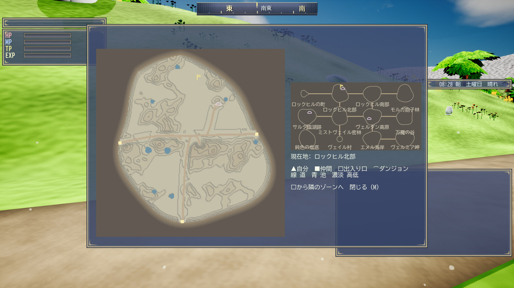
上の並びは世界の地図と同じ。町の東が西部、西部の東が東部、西部の南が密林……とつながっています。
町の東門を出てすぐ。最初の狩り場。スライムやチキンから始めて、ゴブリン・ゴブリン番兵・カクタスまで。大坑道の入口もこの近く。
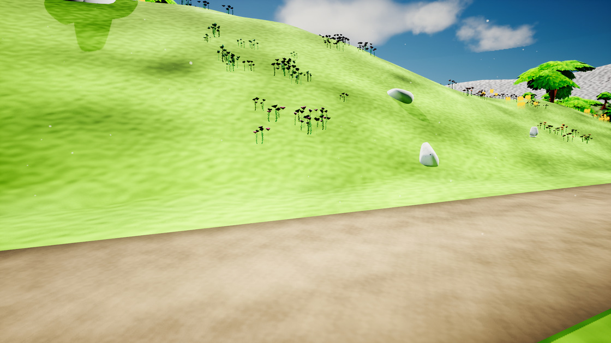
| 魔物 | レベル | 性質 |
|---|---|---|
| スライム | Lv1〜2 | こちらから殴らなければ襲わない |
| チキン | Lv1 | こちらから殴らなければ襲わない |
| コウモリ | Lv2 | 足音に反応 |
| ゴブリン | Lv3 | 見つかると襲う |
| サソリ | Lv4 | 足音に反応 |
| カエル | Lv4 | こちらから殴らなければ襲わない |
| マッシュ | Lv5 | こちらから殴らなければ襲わない |
| ゴブリン番兵 | Lv6 | 見つかると襲う |
| カクタス | Lv7 | 見つかると襲う |
西部の東。オークやワーグが街道に出る。南の端にぬし「ガラ・ヘイ」。副ジョブの「炎の証」はここ。
東部には湖があり、深い所では泳げます。
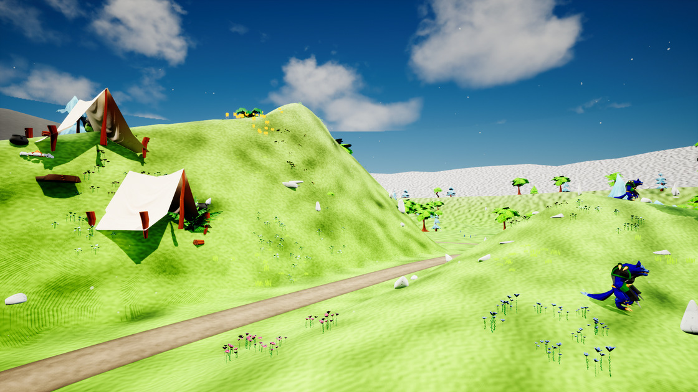
| 魔物 | レベル | 性質 |
|---|---|---|
| スライム | Lv6 | こちらから殴らなければ襲わない |
| バーブ | Lv7 | 見つかると襲う |
| トゲスライム | Lv8 | 見つかると襲う |
| アルマビー | Lv9 | 足音に反応 |
| ゴブリン鉱夫 | Lv9 | 見つかると襲う |
| フィッシュ | Lv9 | こちらから殴らなければ襲わない |
| オーク | Lv11 | 見つかると襲う |
| ワーグ | Lv12 | 見つかると襲う・足音に反応 |
| ゴブリン呪術師 | Lv13 | 見つかると襲う・詠唱に反応・魔法を使う |
| アルパキング | Lv16 | こちらから殴らなければ襲わない |
| ★ ガラ・ヘイ | Lv17 | 見つかると襲う |
西部の南。密林で視界が悪い。サーベルキャットやナーガの司祭は魔法に反応する。奥にぬし「ソルジャークロウラー」「蛇司祭シェザル」。南にヴェイル村。
南西の岩山から三段の滝を経て川が流れ、東の「霧の湖」へ注いでいます。街道は浅瀬と脇の橋で渡れ、川や霧の湖（南岸の桟橋を含む）で釣りができます。霧の湖の深い所では泳げます。
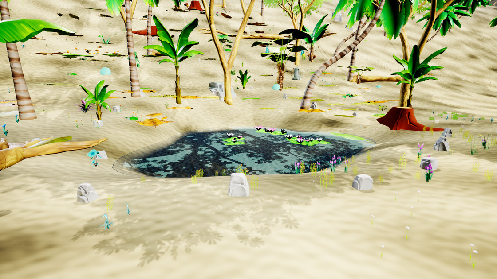
| 魔物 | レベル | 性質 |
|---|---|---|
| カクタス | Lv8 | 見つかると襲う |
| ピンクゼリー | Lv10 | こちらから殴らなければ襲わない |
| サーベルキャット | Lv12 | 見つかると襲う・詠唱に反応・魔法を使う |
| モンクルース | Lv13 | 見つかると襲う |
| グラブ | Lv14 | 足音に反応 |
| コルヴ | Lv15 | 見つかると襲う・詠唱に反応・魔法を使う |
| ディノ | Lv18 | 見つかると襲う |
| ★ ソルジャークロウラー | Lv18 | 見つかると襲う・足音に反応 |
| ナーガの司祭 | Lv18 | 見つかると襲う・魔法を使う |
| ★ 蛇司祭シェザル | Lv20 | 見つかると襲う・詠唱に反応・魔法を使う |
東部の南。鬼ラビットから始まり、奥はイエティや幼竜。地下霊廟の入口があり、ぬし「プリンセストード」「奈落王グァルドス」が出る。
| 魔物 | レベル | 性質 |
|---|---|---|
| 鬼ラビット | Lv14 | こちらから殴らなければ襲わない |
| スクイドル | Lv16 | 足音に反応 |
| ハイワール | Lv17 | 足音に反応 |
| サーベルキャット | Lv18 | 見つかると襲う・詠唱に反応・魔法を使う |
| ゴースト | Lv19 | 見つかると襲う・足音に反応・詠唱に反応・魔法を使う |
| ディノ | Lv20 | 見つかると襲う |
| ★ プリンセストード | Lv20 | 足音に反応 |
| オークスカル | Lv22 | 見つかると襲う |
| コーカス | Lv22 | 見つかると襲う・詠唱に反応・魔法を使う |
| イエティ | Lv25 | 見つかると襲う |
| ★ 幼竜 | Lv28 | 見つかると襲う・足音に反応・詠唱に反応・魔法を使う |
| ★ 奈落王グァルドス | Lv30 | 見つかると襲う・足音に反応 |
高原の東。デーモン・ブルーデーモン・竜の谷。最奥に「ドラゴンロード」「悪夢竜ヴァルガナ」など竜のぬしが並ぶ。
| 魔物 | レベル | 性質 |
|---|---|---|
| ディノ | Lv20 | 見つかると襲う |
| ゴーレリング | Lv21 | 見つかると襲う |
| コルヴ | Lv24 | 見つかると襲う・詠唱に反応・魔法を使う |
| オークスカル | Lv26 | 見つかると襲う |
| イエティ | Lv28 | 見つかると襲う |
| エイリアン | Lv30 | 見つかると襲う |
| スカルゴースト | Lv30 | 見つかると襲う・足音に反応・詠唱に反応・魔法を使う |
| デーモン | Lv32 | 見つかると襲う・詠唱に反応・魔法を使う |
| ★ キノコ王 | Lv33 | 見つかると襲う |
| ブルーデーモン | Lv35 | 見つかると襲う・詠唱に反応・魔法を使う |
| ★ ドラゴン | Lv38 | 見つかると襲う・足音に反応・詠唱に反応・魔法を使う |
| ★ 悪夢竜ヴァルガナ | Lv40 | 見つかると襲う・足音に反応 |
| 戦慄竜 | Lv44 | 見つかると襲う・足音に反応 |
| ★ ドラゴンロード | Lv45 | 見つかると襲う・足音に反応・詠唱に反応・魔法を使う |
| 魂喰竜 | Lv46 | 見つかると襲う・足音に反応 |
東部の東。胞子の魔物は音に反応するものが多い。ぬし「胞子母王モルガ」は勇者の資格の1つ目。
| 魔物 | レベル | 性質 |
|---|---|---|
| 胞子歩き | Lv24〜31 | 足音に反応 |
| 森ミミズ | Lv26〜31 | 足音に反応 |
| 胞子眼 | Lv27〜32 | 見つかると襲う・詠唱に反応・魔法を使う |
| 菌蜜蜂 | Lv28 | 見つかると襲う |
| 胞子霊 | Lv30〜33 | 詠唱に反応・魔法を使う |
| ★ 胞子母王モルガ | Lv35 | 見つかると襲う・足音に反応・詠唱に反応 |
密林の西。塩の魔物。地底塩窟の入口があり、ぬし「塩冠王サルタ」は勇者の資格の2つ目。
| 魔物 | レベル | 性質 |
|---|---|---|
| 塩殻ガニ | Lv32〜39 | 見つかると襲う |
| 干潟エイ | Lv34〜40 | 足音に反応 |
| 塩晶ゴーレム | Lv37〜41 | 見つかると襲う・詠唱に反応 |
| 塩湖サラマンダー | Lv37 | 見つかると襲う・足音に反応 |
| 白骨番兵 | Lv38〜42 | 見つかると襲う |
| ★ 塩冠王サルタ | Lv44 | 見つかると襲う・足音に反応・詠唱に反応 |
高原の南の浜。Lv40代の狩り場。ぬし「海嘯王ガルマーレ」は勇者の資格の3つ目。東にヴェルミア岬。
西の岩山から滝を経て河口の潟が海へつながっています。河口の潟の東西の岸には汽水の釣り場があり、汽水にすむ魚を釣れます。
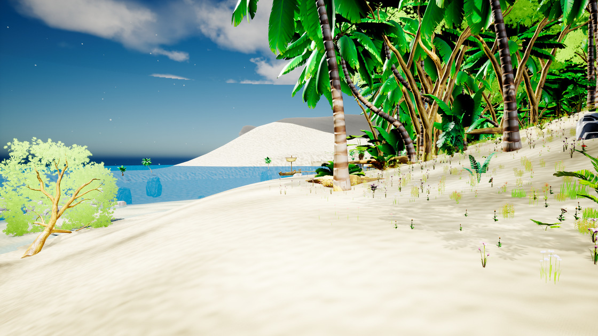
| 魔物 | レベル | 性質 |
|---|---|---|
| 潮騒の大蟹 | Lv40 | 見つかると襲う |
| 砂浜の徘徊蜥蜴 | Lv41 | 見つかると襲う |
| 碧羽の浜鳥 | Lv42 | 見つかると襲う・足音に反応 |
| 漂着樽の粘体 | Lv43 | 見つかると襲う |
| 難破船の亡霊 | Lv44 | 見つかると襲う・足音に反応・詠唱に反応 |
| 珊瑚角の獣 | Lv46 | 見つかると襲う・足音に反応 |
| 浜風の砂喰い | Lv47 | 見つかると襲う |
| 潮煙の骸兵 | Lv48 | 見つかると襲う・足音に反応 |
| 波磨きの岩鬼 | Lv50 | 見つかると襲う |
| ★ 海嘯王ガルマーレ | Lv52 | 見つかると襲う・足音に反応・詠唱に反応 |
塩湖跡の南。Lv50を過ぎてからの狩り場。ギルドの湖の依頼、絆ルカ・ヴァルの証、最奥にぬし「湖底王ネルガル」。
| 魔物 | レベル | 性質 |
|---|---|---|
| 枯塩の徘徊者 | Lv48 | 見つかると襲う |
| 塩喰らいの蜥蜴 | Lv51 | 見つかると襲う |
| 湖底の影 | Lv54 | 見つかると襲う |
| 鹹湖の黒騎士 | Lv57 | 見つかると襲う |
| 白晶の巨躯 | Lv60 | 見つかると襲う |
| ★ 湖底王ネルガル | Lv62 | 見つかると襲う |
最果ての岬。港から北東の廃城、西の古森。剣聖シグルドが港に立つ。ぬし「古森の主エルダリス」「廃城の主ガルデリク」。
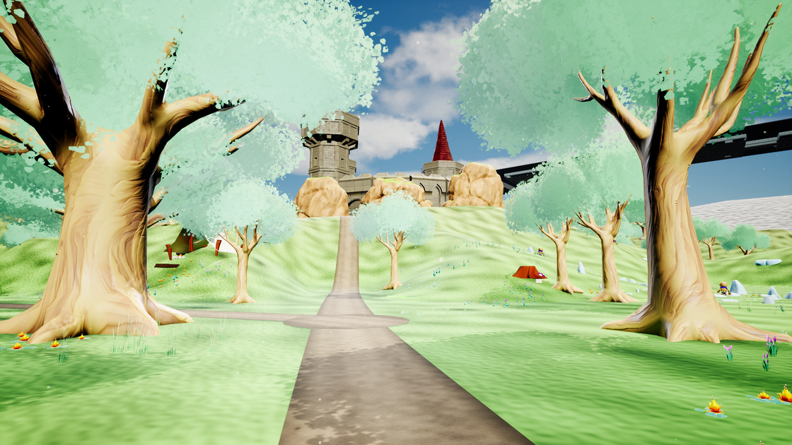
| 魔物 | レベル | 性質 |
|---|---|---|
| 岬の大蟹 | Lv58 | 見つかると襲う |
| 潮溜まりの大蟹 | Lv59 | 見つかると襲う |
| 潮風のハイワール | Lv60 | 見つかると襲う・足音に反応 |
| 古森の狼人 | Lv63 | 見つかると襲う・足音に反応 |
| 古森の妖樹 | Lv64 | 見つかると襲う |
| 古森の守り手 | Lv65 | 見つかると襲う |
| 廃城の骸騎士 | Lv66 | 見つかると襲う |
| 廃城の亡霊 | Lv68 | 見つかると襲う・詠唱に反応 |
| ★ 古森の主エルダリス | Lv68 | 見つかると襲う・足音に反応・詠唱に反応 |
| 城壁の魔道士 | Lv69 | 見つかると襲う・詠唱に反応・魔法を使う |
| 廃城の黒騎士 | Lv70 | 見つかると襲う・足音に反応 |
| ★ 廃城の主ガルデリク | Lv72 | 見つかると襲う・足音に反応・詠唱に反応 |
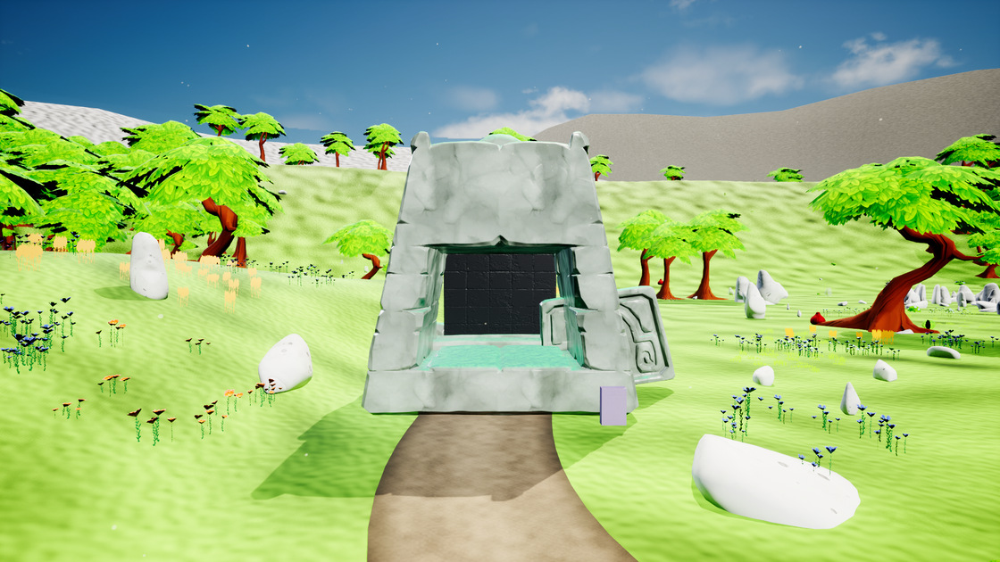
| 場所 | 入口 | レベル | 中身 |
|---|---|---|---|
| ロックヒル大坑道 | ロックヒル西部 | Lv5〜9 | コウモリ・スカルゴースト・ゴブリン鉱夫・アルマビー。奥に主「ドルガン」(Lv9)。鉱夫の依頼「坑道の主を鎮めよ」 |
| 地下霊廟 | ヴェルダン高原 | Lv24〜36 | 墓所の骸兵・さまよう霊・黒鉄の墓守。番人「環守ヴォルク」(Lv34)と主「地下霊廟の主ヴェルガ」(Lv36) |
| 地底塩窟 | サルタ塩湖跡 | Lv40〜52 | 塩殻ガニ・塩湖サラマンダー・塩晶ゴーレム。主「地底塩窟の主サルディス」(Lv52) |
| 影ロックヒル | 町の西・城の北の鏡の祠 | Lv50〜 | 人間の影の一行と戦う11階の試練。高レベルの遊びを参照 |
| 円月闘技場 | 町の西側の入口 | 誰でも | プレイヤー同士で戦う場所。パーティ以外は敵同士。倒れても経験値は減らない。絆は連れて入れない |
| 天空回廊 | 町の「回廊の案内人」に話す | 誰でも | 戦わず跳んで登る塔。コースは日替わりで3つ。落ちても死なない。タイムアタックでグリム |
| ヴェイル村 | ミストヴェイル密林の南 | － | 調理・錬金・鍛冶の合成ができる村。素材屋・料理人・倉庫番が依頼を出す。宿と帰還の印あり |
| ヴェルミアの港 | ヴェルミア岬の入口 | － | 岬の拠点。道具屋・宿・帰還の印・郵便ポスト。剣聖シグルドが立つ |
居られる時間: ロックヒル大坑道・地下霊廟・地底塩窟・影ロックヒルには、入ってから居られる時間が決まっています。ふつうのダンジョンは45分、影ロックヒルは60分です。入ると画面の上（方位計の下）に残りの時間が出て、残り10分・5分・1分でお知らせが出ます。0になると入口の外（影ロックヒルは祠の前）へ戻されます。
主と戦っている最中に0になった時は、戦いが終わるまで（最長10分）延長されます。戦闘不能のまま時間が過ぎた時は、起こされてから戻ります。影ロックヒルで着いた階の記録や試練の証は減りません。
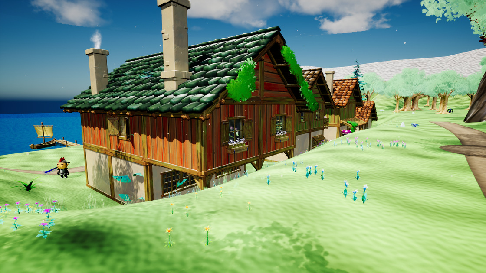
最初に選べるのは基本の6つ（戦士・モンク・白導士・黒導士・紅導士・ローグ）。上級ジョブ5つはLv30前後の依頼で解放されます。ジョブは町の「ジョブ指南役」でいつでも変えられ、ジョブごとに別のレベルで育ちます。迷ったら「戦士」か「白導士」。戦士はHPが高く一人でも狩りやすく、白導士は絆を呼べば安定します。
あらゆる武器を操る戦闘のプロ。高いHPと腕力で前衛として活躍する。
己の肉体を武器とする格闘家。全ジョブ中で最も高いHPを誇る。
回復・支援魔法のスペシャリスト。パーティに不可欠な存在。
攻撃魔法のスペシャリスト。最高の知力とMPで強力な魔法を放つ。
何でもこなす万能職。黒・白の両魔法を扱い、前衛戦闘もこなす。
俊敏な戦士。メインジョブの特性「短剣の急所」で短剣の会心を強め、Lv5から不意打ちを使える。盗む・敵対心の操作も得意とする。
盾と片手剣で前線を守る重装の騎士。聖術も少し扱える。
両手武器で大ダメージを狙う攻撃特化の騎士。盾は持たない。魔術も少し扱える。
獣を心で従える野の狩人。斧を振るい、獣を眠らせて戦況を操る。
影を纏う暗殺者。短剣と体術で敵を翻弄し、分身で刃をかわす。
楽器を携え、歌でパーティを動かす後衛。奏でている間だけ攻撃力・回避・HPとMPの回復が味方に効き続ける。殴れない。
大剣ひとつで道を切り開く剣の達人。魔法は使わず、強烈な剣技で敵をなぎ払う。絆の者だけのジョブ。
今のメインジョブのレベルが、自分の一番高いジョブのレベルより低い間は「先達の加護」が効き、魔物を倒した時の経験値が15%増えます。一番高いジョブのレベルに追いつくと終わります。どの順番でジョブを育てても、低いジョブならどれにでも効きます（一番高いジョブ自身には効きません）。
依頼の報酬の経験値は増えません。レベル合わせ中も、合わせる前のレベルで決まります。効いている間は画面上の状態の列にアイコンと「15%↑」が出て、ログインした時とジョブを変えた時にログでも知らせます。
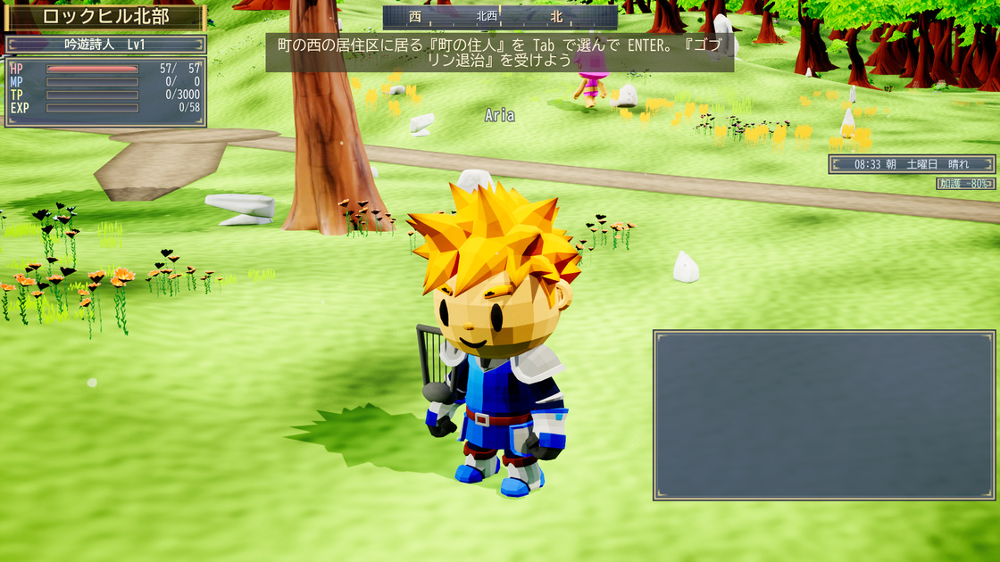
副ジョブはLv20でポムリーの試練を終えると解放されます。
町の「ポムリー」の依頼「炎の証」（ガラ・ヘイ）「土の証」（ソルジャークロウラー）「水の証」（プリンセストード）→「ポムリーの試練」（蛇司祭シェザル）を終えると、メインとは別に副ジョブを付けられます。
副ジョブをメインにしてLv10・20・30・40・50・60まで育てると、六段の心得が解放されます。心得は能力の成長分を30%加え、技と魔法を合わせて心得の段ごとに1つ、副Lv10刻みで最大6つ使えるようになります。副で使う回復の効きは半分です。効く段は主Lv＋10まで。Lv1〜9は効果なしで、第一の心得まであと何Lvかを表示します。レベル合わせ中も段は保ち、効き目だけ合わせた後と前の主Lvの比で縮みます。
攻撃していると溜まるTPを使い、コマンド窓の「武技」から撃てます。技ごとに1000・1500・2000・2500・3000の必要TPがあり（コマンドの説明欄で確かめられます）、使った分だけ減って残りは次へ持ち越せます。余ったTPで同じ技の威力は増えません。TPの上限は3000、使った後の待ち時間は60秒です。必要TPの目安は、Lv1〜24が1000、Lv30台が1500、Lv40が2000、Lv50が2500、Lv60が3000です。武器の種類とレベルで覚える技が変わります。仲間と続けて撃つと「連携」になり、追加のダメージが出ます（連携にさらに魔法を合わせると魔法追撃）。
自動で戦う時は、ふつうの敵には今のTPで撃てる強い技を選び、ぬしや魔核には覚えている一番強い技のTPまで貯めます。剣聖シグルドの奥義・天断はこれまでどおりTPをすべて使います。
武技の一覧では、TPが足りない技や待ち時間中の技にもカーソルを合わせて必要TPや説明を読めます（使えない間は実行できません）。
| 武器 | 武技(覚えるレベル) |
|---|---|
| 片手剣 | ソニックスラッシュ(Lv1)、フレイムスラッシュ(Lv9)、焔返し(Lv15)、閃光刃(Lv30)、蒼天斬(Lv40)、煌刃(Lv50)、天劫剣(Lv60) |
| 格闘 | ラッシュ(Lv1)、ボディチャージ(Lv5)、羅刹掌(Lv15)、炎舞脚(Lv30)、崩拳(Lv40)、天衝脚(Lv50)、百花繚乱(Lv60) |
| 斧 | クラッシュアクス(Lv7)、スマッシュアクス(Lv18)、断岩斧(Lv30)、旋風斧(Lv40)、大地割り(Lv50)、覇王斧(Lv60) |
| 短剣 | 蛇牙突き(Lv8)、刃風(Lv24)、燕返し(Lv32)、影刺し(Lv40)、紅蜂(Lv50)、幻月(Lv60) |
| 両手剣 | 大断ち(Lv10)、月輪斬(Lv20)、剛断(Lv30)、烈火斬(Lv40)、山崩し(Lv50)、覇斬(Lv60) |
| 杖 | 星砕き(Lv1)、地脈撃(Lv20)、流水(Lv30)、天杖(Lv40)、星辰撃(Lv50)、神威(Lv60) |
| 両手鎌 | 刈り風(Lv10)、冥月(Lv20)、影刈り(Lv30)、死神の鎌(Lv40)、魂狩り(Lv50)、冥府送り(Lv60) |
| 棍 | 岩割り(Lv1)、鐘打ち(Lv20)、雷槌(Lv30)、聖打(Lv40)、砕星(Lv50)、天鳴撃(Lv60) |
| 楽器 | フィナーレ(Lv20)、レクイエム(Lv40)、夜想の調べ(Lv50)、終焉の和音(Lv60) |
装備の説明にはアイテムレベル（iLv）が表示されます。必要レベル・格・打ち直しから決まる装備の目安で、戦闘力にも反映されます。装備の窓では、空の枠を除いた平均アイテムレベルも確認できます。
Cキーのステータスの「能力」タブで、今の能力と装備をまとめた戦闘力を確認できます。
装備の能力・装備レベル・格・打ち直しと、修めた証や強化が反映されます。レベル合わせ中は、合わせた後の能力で表示します。現在のHPやMPが減っても、戦闘力は下がりません。
装備を替えた時の比較に使える目安です。技の使い方や仲間との連携を含む、勝敗の保証ではありません。
Cキーの「証」タブでは、育てたジョブの力を5つの枠にはめられます。11ジョブにⅠ・Ⅱの2種類があり、それぞれそのジョブのLv30・Lv60で手に入ります。以前から遊んでいるキャラも、ログイン時に育成済みのレベルに応じて受け取れます。
証はキャラごとに集まり、装着すると今のジョブに関係なく効きます。同じ証は1つまで。同じジョブのⅠとⅡは一緒にはめられ、効果を足し合わせます。バッグの品や、仲間を呼ぶための絆の証とは別のものです。
↑↓で証の一覧、←→で枠を選び、FまたはENTERではめます。同じ枠の証をもう一度選ぶと外れ、別の枠にある証を選ぶと移せます。DELETEは選んだ枠を空にします。パッドは十字キー、Aではめる／外す、Yで枠を空にします。TAB・Shift+TAB・LB/RBでタブを替えます。
戦闘中は変更できません。戦っていなければ、どこでも自由にはめ直せます。灰色の証には取得条件が表示され、中央には装着した証の効果の合計が表示されます。
| ジョブ | 効果 | Ⅰ（Lv30） | Ⅱ（Lv60） |
|---|---|---|---|
| 戦士 | 最大HP | +2% | +3% |
| モンク | TPの溜まり | +3% | +5% |
| 白導士 | 回復量 | +3% | +4% |
| 黒導士 | 魔法の与ダメ | +2% | +3% |
| 紅導士 | 魔法の詠唱時間 | −3% | −4% |
| ローグ | クリティカル率 | +1% | +1.5% |
| ナイト | 受けるダメ | −1.5% | −2% |
| 冥騎士 | 物理攻撃力 | +2% | +3% |
| 獣導士 | 絆の最大HP | +2% | +3% |
| 吟遊詩人 | 強化の持続 | +5% | +8% |
| 忍者 | 回避値 | +2% | +3% |
回避は回避値への割合、クリティカル率は確率への加算です。強化の持続は自分が掛ける強化に効き、絆の最大HPは自分が呼んでいる仲間に効きます。
「絆の者」は、呼ぶといつでも一緒に戦ってくれる仲間です。5人まで呼べて、自分のレベルに合わせて強さが揃います。回復役・盾役・攻撃役をそろえると、格上の魔物やぬしにも挑めます。呼ぶ相手を解放するには、町の「訓練官ドルグ」（前衛の絆）と「導師エルナ」（魔法職の絆）の依頼「絆の証」を終えます。
| Lv | 絆 | 依頼(受ける相手) | やること | 戦い方 |
|---|---|---|---|---|
| Lv10 | 白導士セラ 白導士 | 絆の証・癒 導師エルナ | アルマビー ×8 | 傷ついた仲間を見極め、必要な強さの回復を使う白導士。 |
| Lv15 | 戦士リオ 戦士 | 絆の証・剣 訓練官ドルグ | スクイドル ×8 | 敵の注意を引き受け、主人と回復役を守る戦士。 |
| Lv20 | 黒導士ノア 黒導士 | 絆の証・炎 導師エルナ | ディノ ×8 | 距離を保ち、状況に応じて強力な属性魔法と睡眠を使い分ける黒導士。 |
| Lv25 | モンクガイ モンク | 絆の証・拳 訓練官ドルグ | イエティ ×8 | 敵の背後から拳を重ね、傷つけば自ら立て直すモンク。 |
| Lv32 | ローグミナ ローグ | 絆の証・影 訓練官ドルグ | 胞子眼 ×8 | 敵の背後を取り、一度だけ盗みを試みて隙を突くローグ。 |
| Lv35 | 紅導士リラ 紅導士 | 絆の証・理 導師エルナ | ブルーデーモン ×8 | 回復役の有無を見て、回復・弱体・攻撃を切り替える紅導士。 |
| Lv36 | 吟遊詩人リュカ 吟遊詩人 | 絆の証・音 導師エルナ | スカルゴースト ×14 | 竪琴を抱えて歌う旅の楽師。殴らず、戦の歌と癒しの歌で仲間を支える。 |
| Lv41 | ナイトアルド ナイト | 絆の証・盾 訓練官ドルグ | 塩晶ゴーレム ×8 | 敵の正面に立ち、盾技と守りの構えで仲間を守るナイト。 |
| Lv51 | 忍者カゲロウ 忍者 | 絆の証・霞 訓練官ドルグ | ゴーレリング ×8 | 敵の正面を影で受け、忍術で攻防を組み立てる忍者。 |
| Lv52 | 獣導士ルカ 獣導士 | 絆の証・牙 訓練官ドルグ | 塩喰らいの蜥蜴 ×8 | 格上の獣を弱らせ、勢いと息吹で長く戦う獣導士。 |
| Lv57 | 冥騎士ヴァル 冥騎士 | 絆の証・闇 訓練官ドルグ | 鹹湖の黒騎士 ×8 | 敵の背後から命を削って攻め、吸収魔法で踏みとどまる冥騎士。 |
| Lv60 | 剣聖シグルド 剣聖 | 剣聖の道・試し 剣聖シグルド(ヴェルミアの港) | 廃城の黒騎士 ×10 | 白と黒の鎧に大剣を背負う剣聖。魔法は使わず、一閃と大旋風で敵をなぎ払う。 |
他の人が戦っている魔物は名前が灰色になり、横取りできません（「他の冒険者が戦っている」）。ぬしは金橙の名前と★で目立ちます。
野には冒険者ギルド所属の冒険者（NPC）も狩りをしています。名札の上に《ギルド冒険者》と出ているのが目印で、話しかけても返事はしませんが、同じ狩場で戦っている姿を見かけます。
人と組むと最大6人。TABで人を選びF か ENTER→「パーティに誘う」。経験値はパーティで一番レベルの高い人を基準に配られるので、レベル差が大きいとほとんど入りません。そのときはリーダーがレベル合わせ（誰か1人のレベルに全員をそろえる。Lv10以上）をします。F1〜F6で仲間を選んで回復や強化ができ、Eのアシストで同じ相手を狙えます。
/item 品名。どれかのジョブがLv30になると、Shift+Q（または/ai）で自動で戦えます。自分のレベルに合う狩り場へ歩き、絆を呼び、魔物を狩り、危なくなれば逃げます。薬を使うかどうかも、メインメニューで決められます。試練（影ロックヒル）や天空回廊では自動で戦えません。
Shift+Qで「自動で動く — することを選ぶ」の窓が開きます。↑↓で選び、ENTERで決めます。ESCかShift+Qを押すと、何も変えずに閉じます。カーソルは最後に選んだ行から始まります。選んだ型はこの端末でキャラごとに覚え、/aiでも同じ型を使います。
自動で戦っている間に窓を開くと、「自動で戦うのをやめる」（その場で止まります。戦っている時は、そこから自分で戦います）・「町へ帰ってからやめる」・型の切り替えを選べます。
型の下には「登録している町に戻る」の行もあります。選ぶと、帰還の印を登録した町まで自動で帰り、印の近くで止まります。Lv29までは、戦う型と同じく「Lv30 から」と出て選べません。登録した町の中にいる時や戦っている時も選べません。帰る途中でやめる時は、窓の「自動で戦うのをやめる」か/ai offを使います。
選ぶ行の一番下には「自走で絆を足さない」の印があります。この行でENTERを押すたびに、印が付いたり外れたりします（窓は開いたままです）。印を入れると、自動で動いている間は始めた時に連れていた絆だけで戦い、新しい絆を呼び足しません。印はこの端末でキャラごとに覚えます。Lv30になるまでは、この行も「Lv30 から」と出て選べません。
窓の一番下には「※自動で戦っている間も、戦闘不能になることがあります。ご自身の判断でお使いください。」と出ます。
ヴェイル村では、この窓から「自動で採取する」「自動で採取をやめる」も選べます。Lv30前でも村の採取は選べます。自動の採取は、村の採取地を等級の違う所まで順に全部回ります。
/ai 型 レベル上げのように、チャットで型を指定することもできます。英語名 Balanced / Leveling / Quests / Stay Here / Defeat Only Your Target も使えます。前に「安全第一」の型を選んでいた時は、おまかせで始まります。欠けている絆を呼び足すのは、今までどおりCtrl+Qです。Shift+QとCtrl+Qは、,の操作一覧にも載っています。
左Altを押している間だけ、画面の真ん中に詠唱の鏡が出ます。マウスを動かすか矢印キーで縦か横の線を3本まで引き、左Altを離すと、その形の魔法を唱えます。魔法の名前を打たなくても、形と案内で唱えられます。鏡を出している間は視点が回りません。
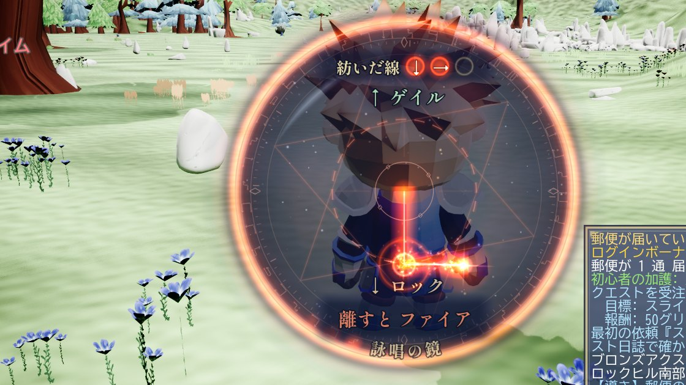
設定の「詠唱の鏡の手ほどき(自動で戦う時)」を入れると、自動で戦っている間は魔法を自動では唱えず、次に唱える魔法の詠唱の手本が画面の左上に出ます。左Altを押したまま、手本の線をなぞると唱えます。しばらくなぞらないと、その魔法はやめて次の手本へ移ります。歩く・攻撃するなど、魔法のほかは今までどおり自動です。初めは切で、切の間は魔法も自動で唱えます。
次に使うのが武技かアビリティなら、手本には面を替える回数、向き、必要な時は頁も出ます。鏡を押したまま案内どおりに面と頁を替え、示された方向へ動かして離すと、その技を使います。
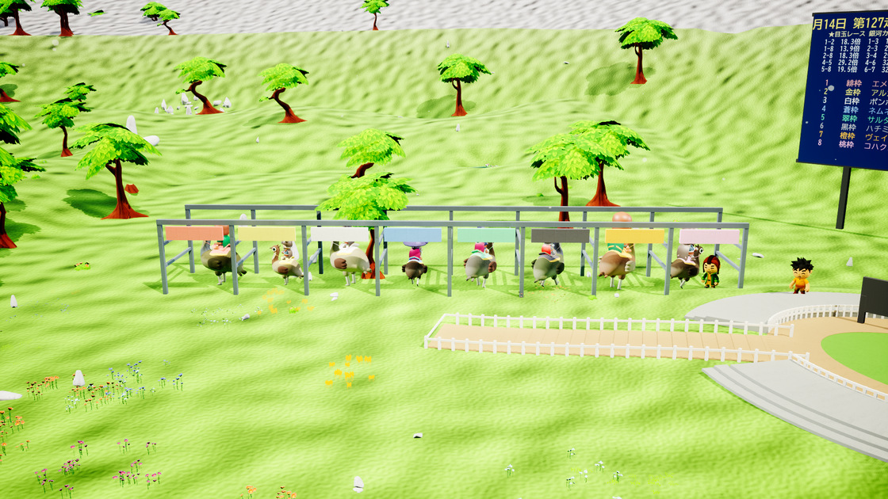
「クルル」は乗り物の鳥。今のクルルはエミューの姿で、鞍と手綱を着けていますが、あぶみはありません。ゲームの中では定期的に競クルル（クルルのレース）が開かれ、券を買って当てるとグリムが増えます。当てた人で山分けするパリミュチュエル方式（控除20%）です。
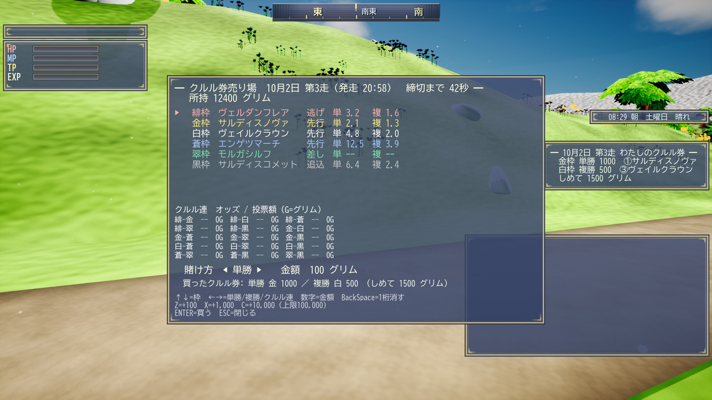
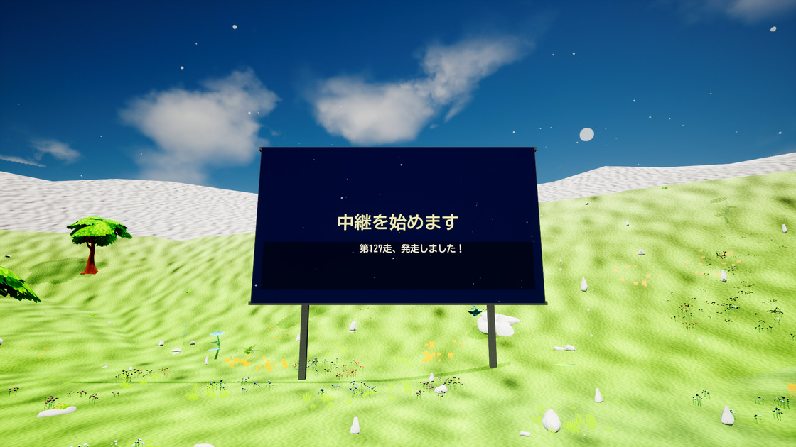
クルル舎の親方の依頼（Lv12〜16）で「クルルの笛」を手に入れると、Vでクルルに乗れます。乗った速さは徒歩の1.5倍から始まり、なつき度が上がるほど速くなって、なつき度Lv6で2.0倍になります。乗ったまま町のクルル競走受付に話すと、ロックヒル西部を一周するタイムアタックに挑めます（賞品はなし、記録だけ）。
まだクルルの笛を持っていないキャラには、ギルド郵便でクルルの試し乗り券が一度届きます。持ち物から使うと、ログインしている間の決まった時間だけクルルに乗れます。残り時間は画面に出て、ログアウト中は減りません。笛はクルル舎の親方の依頼で手に入ります。
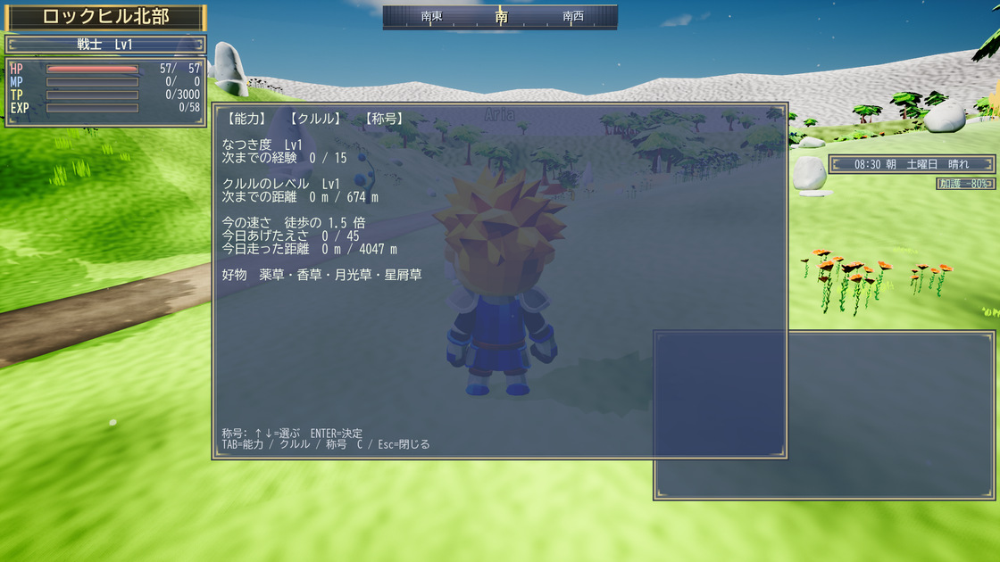
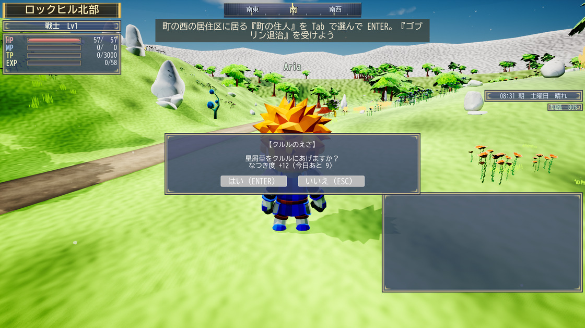
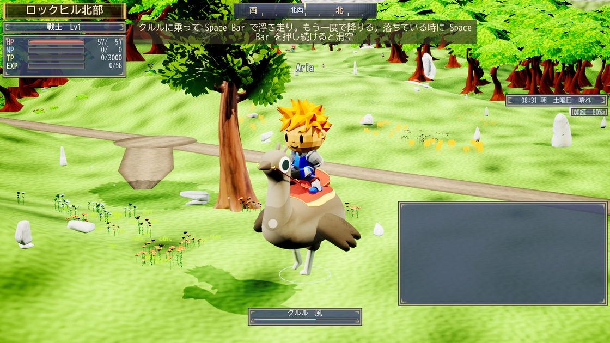
「風の手綱」を持っていると、クルルに乗っている間にSpaceを一度押すと地面から少し浮いて走り（浮き走り）、もう一度押すと降ります。浮いている間は低い段差を越えられ、速さが1割ほど上がります。
落ちている時にSpaceを押し続けると滑空し、離すと普通に落ちます。コントローラーではジャンプのボタン（LT）で同じ操作です。
浮き走りと滑空は「風」を使います。風は最大約30秒ぶんで、地上を走ると戻り、使い切ると降ります。町・ヴェイル村・ダンジョン・天空回廊では使えません。風の手綱をどこで手に入れるかは、下の「クルルとの新しい冒険」をどうぞ。
宝物殿で当たる「風の手綱の試し券」を使うと、ログインしている間の24時間、手綱を持っていなくても浮き走りができます（クルルに乗れる時だけ）。
Oキーで宝物殿を開けます。キーは設定で変更できます。パッドはYのメインメニューの「窓」から開きます。ログイン後の「今日のログインガチャ」の札、ロックヒルの町の「星詠みの祭壇」からも入れます。
宝物殿の「宝物殿」の面には、デイリーガチャ（毎日1回・無料）とガチャ券が、見出しと区切りで分けて出ます。
宝物殿では、書見台に置いた本の封を解いて引きます。11連は専用の枠に札を並べて見せます。演出の間は音楽が少し下がります。出る確率やガチャ券の決まりは「説明」の面にまとめています。
ENTER / Aで封を解きます。約6秒の演出はENTER / AかESC / Bで最後まで飛ばせますが、そのアカウントの最初の1回だけは飛ばせません。「すぐ開く」の設定では本や光の動きを抑えます。
TAB / SHIFT+TAB、LB / RBで「宝物殿」・「引いた記録」・「説明」・「見た目と星屑」・「景品」を切り替えます。記録は直近30件、上下で6件ずつ読めます。ESC / Bで閉じます。
「景品」の面では、格ごとに出る品と個数を見られます。
到達の帳の特典のエピック確定券を持ち物で選んでENTERを押すと、エピック確定の抽選に換わります。宝物殿でE / R3を押すと引けます。
鞄がいっぱいの品は運営の郵便で届きます。グリカは鞄ではなくカード帳へ入ります。受け取りが途中の場合は、表示されたキャラで宝物殿を開いて再開してください。
ガチャ休止中は従来のログインボーナスになります。切り替わった日も200グリムは重複せず、既に受け取った200グリムをもう一度配ることはありません。
アカウントごとに1日1回、200グリムと抽選の贈り物を受け取れます。同じアカウントの別のキャラで引いても回数は共通です。日本時間0:00に回数が戻ります。
| 格 | 出る確率 |
|---|---|
| ノーマル | 70% |
| レア | 22% |
| エピック | 6.5% |
| レジェンド | 1.5% |
7日続けて引くと、7日目はエピック以上が必ず出ます。その日はエピック81.25%、レジェンド18.75%です。7日目の後、または引かない日があった時は1日目に戻ります。
ガチャ券は報酬やお詫びなどで運営からお配りします。宝物殿のガチャ券の欄に持っている枚数が出ます。Xで1枚使って1回、Yで10枚使って11連を引けます（ゲームパッドも X / Y）。11連はガチャ券だけで引け、レア以上が1つ必ず出ます。出る確率は上の表と同じで、200グリムは付きません。
ガチャ券で引いた日は「続けて引いた日」には数えませんが、途切れることもありません。デイリーガチャの7日目のエピック以上はそのままです。引いた記録とチャットのお知らせには、デイリーで引いた物に「デイリー」、ガチャ券で引いた物に「券」の印が付きます。
運営からお届けするガチャ券と宵の欠片は、郵便でガチャ券引換券・宵の欠片引換券として届きます。郵便ポストで受け取ったら、Pの持ち物で引換券を選んでENTERを押すと、確認の後、重なっている枚数をまとめてガチャ券（宵の欠片）に換えられます。Xで分けた分だけ換えることもできます。引換券は人に渡したり売ったりできません。
影ロックヒルの試練の証引換券も郵便で届くことがあり、同じように持ち物で選んでENTERを押すと、重なっている枚数をまとめて試練の証に換えられます。引換券などのチケットの品は、どれも同じ券の絵で、中に品を表す小さな絵が入っています（ガチャ券引換券は本と星、宵の欠片引換券は紫の欠片、試練の証引換券は緑の紋章、クルルの試し乗り券はクルルの頭）。
宝物殿では、次の券も当たります。持ち物で券を選んでENTERを押すと使えます。人には渡せませんが、アカウント共通の倉庫で自分の別のキャラへ移せます。
| 券 | 使うと |
|---|---|
| 浮きの見た目券 | 浮きの色を1つ選んで解放できる。解放した色は釣り帖の特典の頁で付け替えられる。 |
| エモート券 | まだ覚えていないエモートを1つ選んで覚えられる。 |
| 名札の紋券 | 名札の名前の横に出す小さな紋を1つ選んで解放できる。強さは変わらない。 |
| 倉庫の枠引換券 | アカウント共通の倉庫の枠が10増える(5枚まで)。 |
| 経験値の香 | 香を焚き、ログインしている間の1時間、魔物を倒した時の経験値が10%増える。もう1つ焚くと1時間延びる。 |
| 称号の券（3種） | 見た目だけの称号を1つ得る（『星を拾う者』・『宝物殿の常連』・『夜明けの旅人』のどれか）。付けても能力は変わらない。 |
| 星屑の小袋 | 星屑が5個増える(重なっている数をまとめて開ける)。星屑は宝物殿で券と交換できる。 |
| 風の手綱の試し券 | ログインしている間の24時間、クルルに乗って浮き走りができる。クルルに乗れる時だけ使える。 |
宝物殿で当たる風の手綱は、ずっと使える手綱ではなく「風の手綱の試し券」です。手綱そのものの手に入れ方は「クルルとの新しい冒険」をどうぞ。
「見た目と星屑」の面では、解放した浮きの色と名札の紋の付け替え・外し、星屑と券の交換ができます。↑↓で選び、ENTERで決めます。星屑は「星屑の小袋」のほか、もう持っている見た目や称号の券を使った時に、代わりに換えてもらうこともできます。交換には鞄の空きが要ります。交換する時は確かめの窓が出て、交換の前と後の星屑の数を見られます。
https://grimoire-online.org をブラウザで開くと、ゲームを起動しなくても遊べる5つの遊びがあります。ゲームと同じログイン名・パスワードで入り、遊ぶキャラクターを選びます（持ち物とグリムはゲームと共通）。ポータルだけで新しいアカウントとキャラを作ることもできます。メールアドレスの登録やコードの入力は要りません。
| 遊び | 何ができる | 値段 |
|---|---|---|
| 競クルル | 出走表とオッズを見て券を買い、レースをライブで観戦。過去の開催・的中者発表も見られる | 券は100グリムから |
| クレーンゲーム | アームでカプセルや立体グリカをつかむ。景品はグリモカード | 1回50グリム |
| グリカ「魔法陣」 | 4枚のデッキで七マスの陣を取り合う。NPC戦・対人戦・「遊び方」から手ほどき | 無料 |
| 魔導採取帖（裏口） | 伐採は木の癖を読み、採掘は掘るか持ち帰るかを賭け、採草は株を探して根まで抜く手作業ミニゲーム。採れた素材はゲームの持ち物へ入る。採った品は帖に載り、毎日の依頼もある。曜日の属性が合う系統は捗り、月光草は夜だけ | 採取券が1日12枚無料、追加は1枚50グリム（1日8枚まで） |
| 水辺の釣り場 | 浮きを読み、魚の引きに竿で答える釣り。釣れた魚はゲームの持ち物へ入り、大きさ（cm）と自己ベストが残る。釣りの腕前はゲームと共通（遊び方は下の「釣り」） | 釣り券が1日12枚無料、追加は1枚50グリム（1日8枚まで）。採取券とは別 |
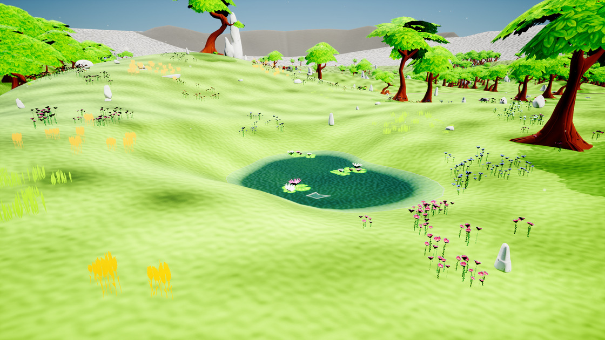
道具屋で木の釣り竿（メインに装備）と餌（ミミズなど。サブに装備）を買い、水辺でN（または/fish）を押すと、持ち物の竿と餌を自動で装備して構えます。一回が終わっても構えと装備はそのままで、結果の札が出ている間にF か ENTERを押せば札を閉じて次を投げます。同じ餌が鞄に残っていれば自動補充し、別の餌だけなら選ぶ窓が出ます。構えの間に,（操作一覧キー）で餌を変えられます。Nをもう一度押す、Esc、歩く、または戦闘・戦闘不能・ゾーン移動・ログアウトでやめ、元の装備へ戻ります。餌によって釣れる魚が変わり（ミミズ=小魚、川エビ=中型、光る羽虫=大物・珍魚、幻のすり身=伝説の魚）、竿は木→竹→匠→黒漆→伝説の「竜鬚」の5段で強くなり、竿力が魚の格に足りないと糸が切れます（竹=ニジマスなどの軽い中型まで・匠=オオナマズなどの重い中型まで・黒漆=夜の大物まで・ぬしは竜鬚だけ）。木・竹・匠は道具屋で買えます。町の「釣り師ヴェッド」の依頼（Lv10、魚10匹）で匠の竿が、続く依頼「大物への道」（オオナマズと晶鱗魚を1匹ずつ）で黒漆の竿がもらえます。竜鬚は大坑道の主が落とします。釣った魚は「魚問屋の主人」が山（10匹）単位で買い取り、今日の目玉は日替わりで高値。買取の上限は約1週間で戻ります。
改装されたロックヒル大坑道の光る水でも釣れます。蒼灯魚・晶鱗魚・深鉱魚は坑道だけの魚で、奥の水ほど大物が掛かりやすくなります。
釣れる魚は全部で86種です。野の池・ミストヴェイル密林の川と霧の湖・エメル海岸の河口の潟（汽水）・海辺・大坑道の光る水のほか、地下霊廟と地底塩窟の水でも釣れます。同じ水辺でも、時刻・天気・餌で掛かる魚が変わります。
南の湖（ロックヒル東部）でも釣れます。岸からは水際のすぐそばに立った時だけ、桟橋の先はいつもどおり竿を出せます。湖にだけいる魚が10種いて、釣り帖には「湖」の章が加わります。どんな魚がいるかは、釣って確かめてください。
エメル海岸の河口の潟（汽水）でも釣れます。西の河口にできた潟の東西の岸が汽水の釣り場になっており、汽水にだけいる魚が4種います。釣り帖には「汽水」の章が加わります。
釣った魚を使う料理も多くあります。
Iで釣り帖が開き、釣った魚が載ります。題の横の数は「釣った種類 / 全部の種類 種」で、魚の頁には名前の前に「No. 番号」が付きます。
釣り帖では、釣った種類の数や大物の数に応じて、称号や浮きの色などの特典がもらえます。釣った種類が20種に届くと「水辺の博物家」、30種で「水辺の語り部」、50種で「釣り帖の博士」です。「釣り帖の主」と章ごとの名人（池・坑道・海）は、前からいる17種の魚が対象です。特典でもらった浮きの色は、釣り帖の特典の頁で付け替えられます。
地下霊廟と地底塩窟の釣り場: 2つのダンジョンの中の水でも釣れます。どちらにも、その水でしか釣れない魚が3種ずついます。地下霊廟の3種をすべて釣ると「霊泉の釣り名人」、地底塩窟の3種をすべて釣ると「塩溜まりの釣り名人」の称号が、釣り帖の特典でもらえます。ダンジョンの中は居られる時間が決まっているので、釣りの間も残りの時間に気をつけてください。
魚ごとの釣れる場所・竿・餌・時刻・天気・値段・使い道は、釣り図鑑にまとめています。
Webポータルの「水辺の釣り場」は、ゲームの釣りとは遊び方が違います。釣り券を1枚使って投げ（Nか「投げる」）、次の順に進みます。
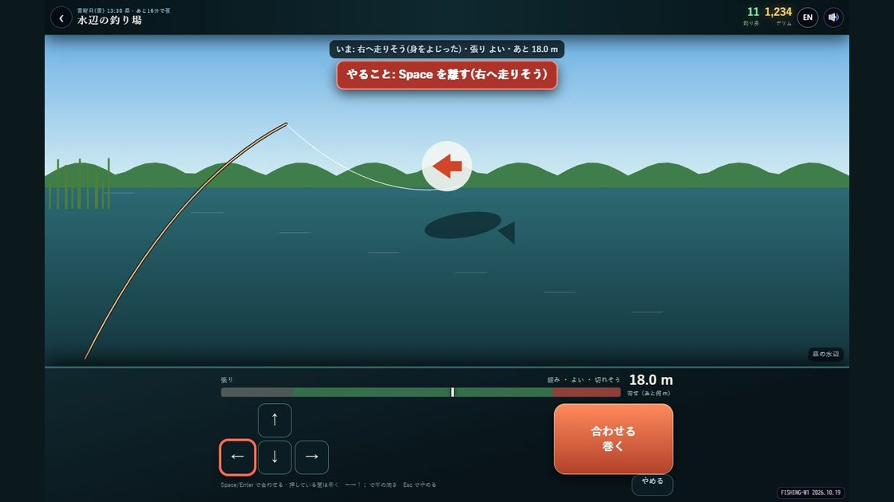
釣りの間、画面の上に2行の案内が出ます。
「やること」の色で、急ぎ具合が分かります。
腕前が低い間（30まで）は、池の中に大きな矢印も出て、押すボタンの縁が光ります。腕前が31になると矢印は出なくなります。その少し前（28〜30）と31になった時に、初心者の導きで1回ずつ知らせます。
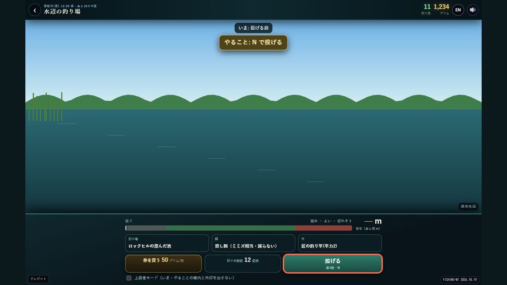
操作盤のいちばん下にある「上級者モード」の印を入れると、「いま」「やること」の案内と矢印を出さずに遊べます。慣れて、自分の目で浮きと魚を読みたい人向けです。
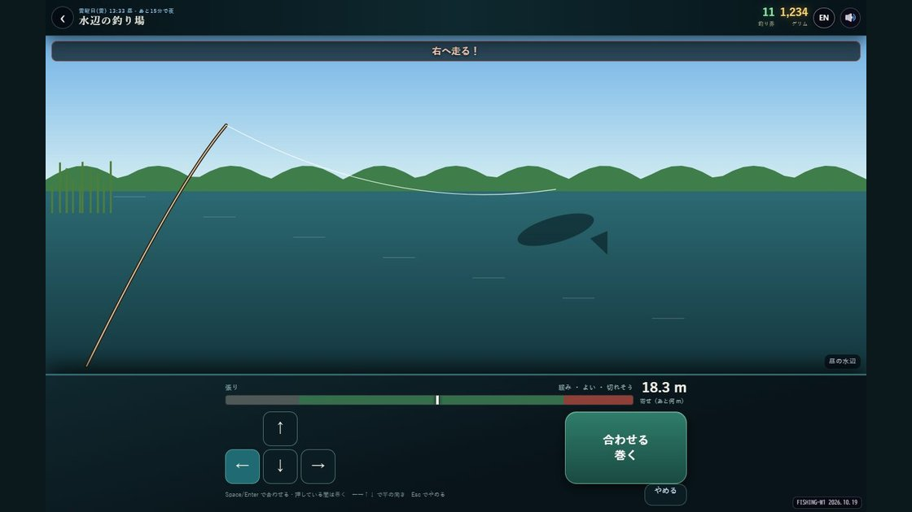
採取するときは、木・岩・草むらのすぐ近くまで寄りましょう。手動でも自動採取でも、採取専用の短い距離で作業します。作業中に離れると手を止めます。
自動採取では空いている立ち位置を選び、混んでいたら別の採取地へ向かいます。絆の者は自動採取の間だけ姿を消して休み、やめると戻ります。村で採取を始めるとクルルから降り、採取中に乗ると自動採取をやめます。村までの長旅は乗ったままでかまいません。
採取地の枯れはキャラごとです。同じ場所でほかの人と同時に採れます。自分が採った場所だけがしばらく枯れ、時間がたつと戻ります。村・野外・ダンジョンで共通です。入り直しても戻る時刻は変わりません。
野に立つ木・岩・草の採取地にF か ENTERで作業が始まり、バーが満ちると素材（丸太・銅の原石・薬草など）が手に入ります。等級が上がるほど太い木や珍しい鉱石が採れます。Webポータルの「魔導採取帖」でも同じ素材が採れます。
ミストヴェイル密林の南のヴェイル村で、素材と精石（火・氷・風・土・雷・水）を組み合わせて/craft。調理（料理人）・錬金（素材屋。ポーション類）・鍛冶（倉庫番。武器・防具）の3系統で、村の依頼を順に終えると腕（スキル）の目標が分かります。スキルはUで確認。
ヴェイル村の鍛冶台（ロックヒルの町の鍛冶台でも同じ）では、鍛冶スキル100になると、メニューに「鍛え直す」が出ます。バッグにある1つずつの武器・防具を+1〜+5まで鍛え直せます。1段ごとに能力の値が4%上がり、+5で20%上がります。
| 目標 | 鍛え石 | 星鉄の原石 | 土の精石 | 成功の見込み |
|---|---|---|---|---|
| +1 | 1 | – | 1 | 95% |
| +2 | 2 | – | 2 | 85% |
| +3 | 3 | – | 3 | 70% |
| +4 | 4 | 1 | 4 | 50% |
| +5 | 5 | 2 | 4 | 30% |
失敗すると材料はなくなりますが、段は下がらず、今の段のままです。鍛え石は鍛冶台で、鉄の原石2つと土の精石1つから作れます（鍛冶60から）。
グリカ「魔法陣」は、外周6マスと中央の核、計7マスで札を取り合う遊びです。Bのカード帳で4枚・重さ22までのデッキを組み、相手を選んでXで挑みます。重さは力の合計、力3以下の特技つきは1枚につき+1。レジェンドは1枚、エピックは2枚まで。向かいの人との対局は卓に座って申し込みます。
町の人に挑む時は、盤が開く前に対戦の確かめの窓が出ます。相手の名前・格（★の数）・読み・場の刻印とその説明、その相手に勝ったことがあるかを見てから、F か ENTERで対戦、ESCでやめます。
盤の操作は↑↓で手札、A/Dで外周、Wで核、Sで外周へ戻ります。ENTERで先読み、もう一度で置きます。Pで先読みを切り替え、対局中にESCを押すと投了の確認が出ます（ENTERで投了、ESCで続ける）。Web版は札と置き場所をタップし、先読みを見てから決定します。
町の「回廊の案内人」に話すと、戦わずに跳んで登る塔へ送られます。落ちても死なず、通り過ぎた一番上の「かがり火」へ戻されるだけ。入ると10分のタイムアタックが始まります。途中のかがり火は通過の印で、グリムは頂上へ着いた時だけ受け取れます。その日の初めての踏破で300〜600グリム（基本250グリムに速さのボーナス：3分未満+350、5分未満+300、8分未満+175、10分未満+50）、2回目以降は1割です。報酬は1日3回まで、1日の合計は1500グリムまで（それを超えても登ることはできます）。踏破で称号「空駆ける者」、3分未満で「天翔ける者」。回廊の中だけジャンプが高くなります。絆とクルルは連れて入れません。
コースは日替わり（毎朝4時に切り替わり）。風見の螺旋（青空と石の足場）→茜雲の浮島（夕焼けの雲。行き来する台・上下する台・跳ね台）→星渡りの天橋（夜空。星の台・現れては消える台・一本橋）の順に回ります。茜雲と星渡りは難しめで、跳ぶ距離も高さも一つずつ違い、丸・四角・三角・六角の足場や、降りてから登る所・行き止まりの分かれ道があります。誰でも登れる道は下の2つの層だけです。今日のコースは案内人の頭の上に「本日：○○」と出ます。自己ベストと最速記録はコースごとに残ります。中継のかがり火と頂上では音が鳴ります。頂上の先（空都篇）は正式版で開きます。
クルルの笛を手に入れた後は、クルルならではの動き（浮き走りや滑空）を生かした新しい依頼が加わります。どこで何ができるかは、遊んでからのお楽しみです。
町の西、城の北にある鏡の祠の番人「影守りのセイラ」が「勇者の資格」の依頼を出します（どれかのジョブがLv50から）。3つの王のぬし──胞子母王モルガ（モルガ胞子林・Lv35）・塩冠王サルタ（サルタ塩湖跡・Lv44）・海嘯王ガルマーレ（エメル海岸・Lv52）──を倒して紋章を集めると、祠が開きます。
| 階 | 場所 | この階のヒント | 影の一行 |
|---|---|---|---|
| 1F | 石牢 | 癒し手を先に倒せ 傷を癒す者がいる限り、剣は折れない | 剣闘士ガロ(戦)・白の祈り手ミラ(白) |
| B1 | 地下水路 | 盾に惑わされるな 挑発に乗らず、後ろの魔導士を狙え | 盾士ロウ(ナ)・黒の術士ネネ(黒)・白の癒し手ユラ(白) |
| B2 | 書庫 | 影を捉える目を持て 分身と回避を破るには、命中が要る | 盗賊カイ(盗)・忍びシノ(忍)・紅の剣士リゼ(紅) |
| B3 | 聖堂 | 歌を止めよ 詩人の歌が、前衛を鬼に変える | 暗刃グレン(冥)・拳士バン(拳)・吟遊詩人フィオ(吟)・白の司祭ソラ(白) |
| B4 | 獣舎 | 数を見誤るな 獣導士の傍らには、もう一体いる | 獣導士ラナ(獣)・戦士ゴウ(戦)・黒の賢者クロ(黒)・紅の守り手エマ(紅) |
| B5 | 鏡の間 | 己を知れ 鏡に映るのは、お前たち自身だ | 写し身(こちらの編成と同じジョブ) |
| B6 | 魔導炉 | 魔法を封じよ 沈黙を。魔法への守りを | 双星の黒×2・紅の導師・白の導師・詩人… |
| B7 | 闘技の坑 | 一撃に耐えよ 盾が倒れれば、すべてが崩れる | 戦士ザン・冥騎士ヴァル・拳聖メイ・忍頭レン・詩人… |
| B8 | 氷の回廊 | 連携を断て 重なる技こそ、最も恐ろしい | 聖騎士アル・白賢者ティア・黒賢者ベル・紅賢者ミナ・詩人… |
| B9 | 溶岩の祭壇 | 切り札を読め 彼らは最後の力を順に解き放つ | 精鋭の盾・刃・拳・忍・紅… |
| B10 | 王の間 | 勇者の座を継げ 先代勇者一行、最後の試練 | 先代勇者レオン・先代の戦士ディン・先代の拳士マオ… |
ジョブがLv60に届くと、町の「ジョブ指南役」から、そのジョブの極みの試練を受けられます。鏡の向こうに現れる先代の影と戦い、制限時間のうちに勝つと、称号「極めし（ジョブ名）」が得られます。白導士と吟遊詩人の試練は準備中です。
Cのステータスの窓の「到達の帳」のタブで、そのキャラクターのジョブがLv60にいくつ届いたかと、届いた数ごとの特典を見られます。
帳には、アカウント全体でLv60に届いたジョブの数と、次の段まであといくつかも出ます。段ごとの特典は準備中です。
手に入れた称号はCのステータスの窓で付け替えられ、名前の前に【称号】と出ます。付けている称号の分だけ能力が上がります。宝物殿の称号の券で得る称号は見た目だけで、付けても能力は変わりません（下の表には載せていません）。称号タブでは、一覧の上に「称号（持っている数 / 全部の数）」と名札の説明がいつも出ています。
| 称号 | 条件 | 効き目 |
|---|---|---|
| 【勝負師】 | 競クルルで3連勝 | 命中+5 |
| 【クルルの申し子】 | 競クルルで5連勝 | 命中+8 回避+5 |
| 【伝説の目利き】 | 競クルルで10連勝 | 命中+12 回避+8 |
| 【天運の覇者】 | 競クルルで100連勝 | HP+50 命中+20 回避+15 |
| 【空駆ける者】 | 天空回廊を踏破する | 回避+8 |
| 【天翔ける者】 | 天空回廊を3分未満で踏破する | 命中+5 回避+12 |
| 【絵札の覇者】 | グリカで10人に勝つ | MP+30 防御+5 |
| 【熟練の冒険者】 | どれかのジョブをLv60にする | HP+60 MP+20 |
| 【挑戦者】 | 影ロックヒルのB3を突破する | 攻撃+6 防御+6 |
| 【英傑】 | 影ロックヒルのB5を突破する | 攻撃+10 防御+10 |
| 【勇者候補】 | 影ロックヒルのB8を突破する | HP+50 攻撃+12 防御+12 |
| 【勇者】 | 影ロックヒルのB10を突破する | HP+100 MP+50 攻撃+15 防御+15 命中+10 |
| 【富豪】 | 10万グリムを貯める | MP+20 防御+5 |
| 【大富豪】 | 100万グリムを貯める | HP+40 MP+40 防御+10 |
| 【天上の料理長】 | 料理のスキルを100にする | HP+50 MP+30 |
| 【霊薬の賢者】 | 錬金のスキルを100にする | MP+50 回避+8 |
| 【神鎚の名工】 | 鍛冶のスキルを100にする | 攻撃+10 防御+10 |
| 【万工の匠】 | 依頼「八つ目の冠」を果たす | HP+40 MP+40 攻撃+8 防御+8 |
空都篇の称号は正式版で加わります。
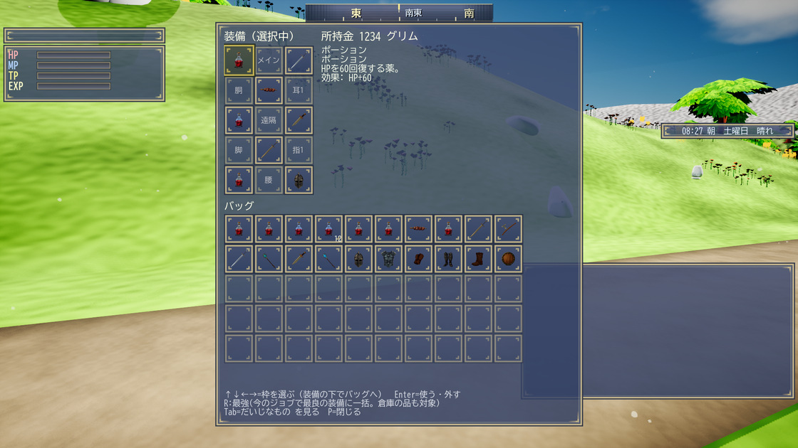
武器・盾・防具は、品ごとに見た目や色が変わります。頭装備とマントも姿に現れ、武器を抜いていない時は背中へ収めます。帽子や兜を隠したい時は、メインメニュー → 設定の「頭の装備を見せない（帽子や兜を隠す）」を入れてください。能力はそのままで、見た目だけが変わります。
P の装備の面には姿見があり、装備を替えるとその場で姿へ映ります。V または右スティックで回して、前後から確かめられます。
装備には必要レベルと、着けられるジョブがあります。新しい町や村に着いたら店をのぞき、依頼の褒美とぬしの落とし物で埋めていくのが基本です。
両手持ち武器を装備中は、サブ枠の盾や釣り餌を装備できません。冥騎士は盾を持たず、大剣・両手斧・鎌などの両手武器で戦います。
装備に付いている腕力・器用・耐久・敏捷・知力・精神・魅力の値は、キャラクターの能力に加わり、攻撃・防御・命中・回避・魔法や回復の効き目・戦闘力にも反映されます。最強装備でも、ジョブに合う能力を含めて選びます。
| Lv | 防具 | 武器 | 手に入れ方 |
|---|---|---|---|
| Lv1 | レザーバンダナ・布の胴着・レザーグローブ・レザートラウザ・レザーハイブーツ | ブロンズ系(剣・短剣・斧・棍・ナックル)・見習いの杖 | 町の防具屋・武器屋 |
| Lv10 | ブラスキャップ・チェーンメイル・ブラスフィンガー・チェーンホーズ・グリーブ | アイアン系・オークスタッフ・グレートソード・ウォーサイズ | 町の店。指輪・ピアスもLv10から |
| Lv20 | ミスリルメイル(前衛)／疾風の胴着(軽装)／呪紋のコイフ(魔法職) | ミスリルソード・ミスリルアクス | 町の店と依頼の報酬 |
| Lv30 | ミスリルヘルム・隠形の頭巾・星詠みの法衣・香草の外套 | ダマスカスソード・ダマスカスクロー | 村の合成・魔物の落とし物・競売 |
| Lv40 | アダマンガントレ・韋駄天の籠手・清唱の靴・月光の脚甲 | アダマンソード・アダマンクロー・闇祓いの大剣 | ギルドのアダマン依頼・店(Lv40〜) |
| Lv50 | 影銅→影銀→影金→勇者の装備(頭・胴・手・脚・足) | 影銅〜勇者の各武器 | 影ロックヒルの証と交換(鏡の祠) |
| Lv60 | 大賢者のローブ・天羽の道着・竜鱗の大鎧・星屑の法衣 | 白銀の聖剣・覇王の拳・賢者の杖・星鉄の槌 | 町の店(Lv60)・ヴェルミア岬の落とし物・合成 |
| 品 | 効き目 |
|---|---|
| ポーション | HPを60回復する薬。 |
| ハイポーション | HPを150回復する高品質な薬。 |
| マナポーション | MPを30回復する薬。 |
| ハイマナポーション | MPを150回復する高品質な薬。 |
| 毒消し | 毒とヴェノムを治す薬。 |
| 声戻しの薬 | 静寂の状態異常を治す薬。 |
| 川魚の串焼き | 川や池の魚を串に刺して焼いた物。一定時間、攻撃力と防御力が上がる。 |
| 魚 | 釣りで獲れた魚。食べるとHPが少し回復する。合成素材にも。 |
| 麻痺治し | 麻痺の状態異常を治す薬。 |
| 万能薬 | 毒・ヴェノム・麻痺・静寂をまとめて治す薬。 |
| クルルの試し乗り券 | 使うと、ログインしている間の1時間だけクルルに乗れる。使うとなくなる。 |
| 塩焼きの魚 | 川魚を塩で焼いた素朴な一皿。しばらく体力の減りが和らぐ。 |
| 月光魚の香草焼き | 香草を敷いて焼いた月光魚。じんわりと力が湧く。 |
| 星屑のスープ | 星屑草を煮出した淡く光るスープ。深い休息をもたらす。 |
| ニジマスの香草蒸し | 香草で蒸したニジマス。穏やかに力が続く。 |
| 木の実のパン | 若木の枝で焼いた素朴なパン。腹持ちがよい。 |
| なまず鍋 | オオナマズを丸ごと煮た力自慢の鍋。体が芯から温まる。 |
| 霜降り燻製 | 霜降り材で燻した魚。日持ちがして味が濃い。 |
| 淵の王の姿煮 | ヌシを丸ごと煮付けた村一番のごちそう。 |
| 帰郷の羽（町） | 使うとロックヒルの町へ飛べる羽。 |
| 帰郷の羽（村） | 使うとヴェイル村へ飛べる羽。 |
| ガチャ券引換券 | 持ち物で選んで ENTER を押すと、ガチャ券に換えられます(重なっている枚数をまとめて)。 |
| 宵の欠片引換券 | 持ち物で選んで ENTER を押すと、宵の欠片に換えられます(重なっている枚数をまとめて)。 |
| 試練の証引換券 | 持ち物で選んで ENTER を押すと、試練の証に換えられます(重なっている枚数をまとめて)。 |
| 淡水魚の香草焼き | 淡水魚を使った料理。攻撃と防御+10%、20分。 |
| 底ものの煮込み | 底ものを使った料理。攻撃と防御+12%、25分。 |
| 珍魚の香り蒸し | 珍魚を使った料理。攻撃と防御+16%、30分。 |
| 青魚の燻製 | 青魚と赤身を使った料理。攻撃と防御+14%、30分。 |
| 白身魚の包み焼き | 白身を使った料理。攻撃と防御+12%、25分。 |
| 淡水魚の宴鍋 | 淡水魚を使った料理。攻撃と防御+18%、35分。 |
| 水の王の大皿 | 伝説魚を使った料理。攻撃と防御+20%、40分。 |
| 浮きの見た目券 | 持ち物で選んで ENTER を押すと、浮きの色を1つ選んで解放できる。解放した色は釣り帖の特典の頁で付け替えられる。人には渡せないが、アカウント共通の倉庫で自分の別のキャラへ移せる。 |
| エモート券 | 持ち物で選んで ENTER を押すと、まだ覚えていないエモートを1つ選んで覚えられる。人には渡せないが、アカウント共通の倉庫で自分の別のキャラへ移せる。 |
| 名札の紋券 | 持ち物で選んで ENTER を押すと、名札の名前の横に出す小さな紋を1つ選んで解放できる。強さは変わらない。人には渡せないが、アカウント共通の倉庫で自分の別のキャラへ移せる。 |
| 倉庫の枠引換券 | 持ち物で選んで ENTER を押すと、アカウント共通の倉庫の枠が10増える(5枚まで)。人には渡せないが、アカウント共通の倉庫で自分の別のキャラへ移せる。 |
| 経験値の香 | 持ち物で選んで ENTER を押すと香を焚き、ログインしている間の1時間、魔物を倒した時の経験値が10%増える。もう1つ焚くと1時間延びる。人には渡せないが、アカウント共通の倉庫で自分の別のキャラへ移せる。 |
| 称号の券・星を拾う者 | 持ち物で選んで ENTER を押すと、称号『星を拾う者』を得る。見た目だけの称号で、付けても能力は変わらない。人には渡せないが、アカウント共通の倉庫で自分の別のキャラへ移せる。 |
| 称号の券・宝物殿の常連 | 持ち物で選んで ENTER を押すと、称号『宝物殿の常連』を得る。見た目だけの称号で、付けても能力は変わらない。人には渡せないが、アカウント共通の倉庫で自分の別のキャラへ移せる。 |
| 称号の券・夜明けの旅人 | 持ち物で選んで ENTER を押すと、称号『夜明けの旅人』を得る。見た目だけの称号で、付けても能力は変わらない。人には渡せないが、アカウント共通の倉庫で自分の別のキャラへ移せる。 |
| 星屑の小袋 | 持ち物で選んで ENTER を押すと、星屑が5個増える(重なっている数をまとめて開ける)。星屑は宝物殿で券と交換できる。人には渡せないが、アカウント共通の倉庫で自分の別のキャラへ移せる。 |
| 風の手綱の試し券 | 持ち物で選んで ENTER を押すと、ログインしている間の24時間、クルルに乗って浮き走りができる。クルルに乗れる時だけ使える。人には渡せないが、アカウント共通の倉庫で自分の別のキャラへ移せる。 |
| エピック確定券 | 持ち物で選んで ENTER を押すと、宝物殿のエピック確定抽選に換えられます(1枚で1回・重なっている枚数をまとめて)。 |
| 物理耐性の巻物 | 1分間、最大HPの2割以上になる大きな物理攻撃を3回まで防ぐ。小さな攻撃と魔法は防げない。 |
| 魔法耐性の巻物 | 1分間、大きな魔法の一撃（最大HPの2割以上）や敵の状態異常を合わせて3回まで防ぐ。小さな魔法は通る。 |
| 俊足の巻物 | 自分に使う。30秒間、走る速さが25%上がる。戦闘中も使える。 |
| 集中の巻物 | 自分に使う。1分間、被害による詠唱中断を3回まで防ぐ。 |
| 再起の巻物 | 自分に使う。30分以内に倒れると、一度だけその場で復活する。 |
| 忍び足の巻物 | 自分と、絆を含むパーティ全員にかかる。1分間、魔物やぬしに気付かれない。攻撃・敵への魔法・武技で、その人の分だけ切れる。戦闘中の敵には効かない。 |
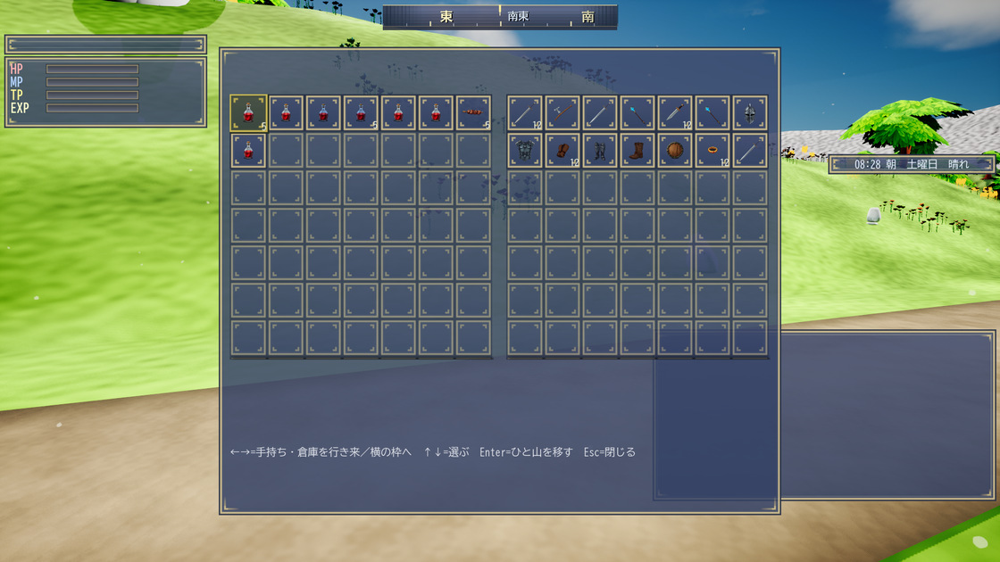
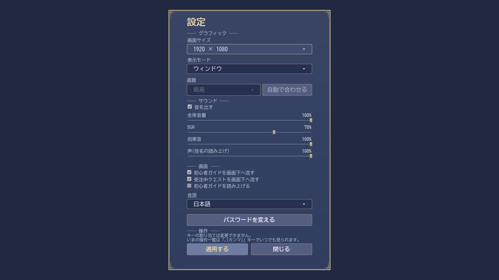
チャットでも /通報 名前、/ミュート 名前、/ミュート解除 名前、/ミュート一覧 が使えます。英語の /report、/mute、/unmute、/mutelist も同じ操作です。通報は理由を選び、送る物を確認して二段階で確定します。初期選択は「やめる」で、送信前に1秒待ちます。通報は1日5回、同じ相手には10分に1回まで。ミュートは端末に最大100人を保存し、発言とパーティの誘いを隠します。
/help | コマンドの一覧を出す |
|---|---|
/invite 名前 | パーティに誘う(コマンド窓の「パーティに誘う」でも) |
/join | 誘いを受ける |
/decline | 誘いを断る |
/leave | パーティを抜ける |
/p 文 | パーティに話す |
/friend 名前 | フレンドを申し込む |
/attack | 選んだ相手を攻撃 |
/assist | アシスト |
/ws 技名 | 武技 |
/ma 魔法名 | 魔法 |
/ja 技名 | アビリティ |
/item 品名 | 品を使う |
/fish | 釣り |
/craft・/synth | 合成(ヴェイル村) |
/kururu | クルルに乗る・降りる |
/ah | 競売の窓を開く(係員の近くで) |
/job | ジョブを見る |
/subjob | 副ジョブ |
/quest | クエストの窓 |
/loc | 今いる場所の座標 |
/ai | 自動で戦うのを始める・止める(Lv30〜) |
日本時間22:00〜22:29の間に、毎晩1体の宵のぬしが現れます。前の日と同じぬしは現れません。90分で去り、戦闘中だけ最大15分延長します。
別のパーティでも一緒に戦えます。与えたダメージ・実際の回復・受けたダメージが貢献になります。対象帯の上位5人へ固有品を1つ、全体の貢献1%以上で宵の欠片を1個受け取れます。対象帯より上のレベルの人（レベル封じをしていない人）とその絆は、ダメージを与えられず、貢献にも報酬にも数えられません。レベル封じで帯に入れば挑めます。
固有品はレア・譲渡不可で、紫の枠の特別な格の品です。同じ装備レベルのふつうの品より強くできています。宵守りのリネ（ロックヒルの大通りの北側、魚問屋の主人の西隣）に話しかけると交換所が開き、宵の欠片と交換できます。既に持っている品は交換できません。表の必要数は宵の欠片の個数です。
レベル封じをして挑んでも大丈夫です。宵のぬしは封じたレベルで相手を数え、封じている間も絆は全部呼べます。ただし、宵のぬしへの貢献が残っている間は、レベル合わせもレベル封じも外せません。
| 対象帯 | 装備レベル | 必要数（武器 / 防具 / 指輪） |
|---|---|---|
| Lv20–30 | Lv29 | 8 / 6 / 4 |
| Lv30–40 | Lv39 | 12 / 10 / 8 |
| Lv40–50 | Lv49 | 16 / 14 / 12 |
日本時間21:00〜21:29の間に、宵のぬしより手ごろな強さの宵の先触れが現れます。体力は宵のぬしの約3分の1です。45分で去り、戦っていても延びません。対象帯と貢献の数え方は宵のぬしと同じです。順位の特典は無く、貢献した人それぞれに、宵の欠片や帯の固有品が当たることがあります。倒した後のチャット欄には、品と宵の欠片がそれぞれ手に入ったかどうかが出ます。もらえる経験値は宵のぬしより少なめです。